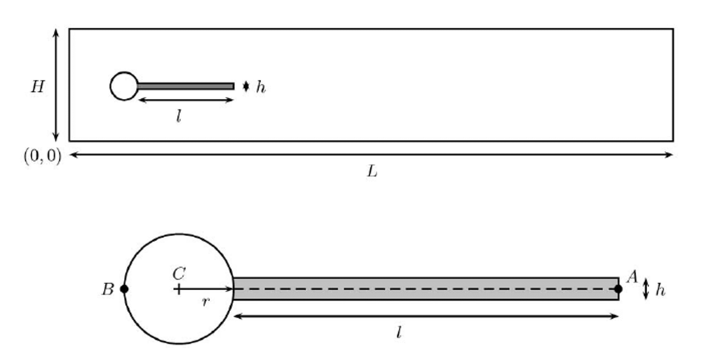

Note
Go to the end to download the full example code.
Turek-Hron FSI2 Benchmark Example#
This example is a version of the Turek-Hron FSI2 case that is often used as a benchmark case for System Coupling. This two-way, fluid-structure interaction (FSI) case is based on co-simulation of a transient oscillating beam with surface data transfers.
Ansys Mechanical APDL (MAPDL) is used to perform a transient structural analysis.
Ansys Fluent is used to perform a transient fluid-flow analysis.
System Coupling coordinates the coupled solution involving the above products to solve the multiphysics problem via co-simulation.
Problem description
An elastic beam structure is attached to a rigid cylinder. The system resides within a fluid filled channel:
{kind=link}
The flow is laminar with a Reynolds number of \(Re = 100\). The inlet velocity has a parabolic profile with a maximum value of \(1.5 \cdot \bar{U}\), where \(\bar{U}\) is the average inlet velocity. The cylinder sits at an offset of \(0.05~m\) to the incoming flow, causing an imbalance of surface forces on the elastic beam. The beam and the surrounding fluid are simulated for a few time setps to allow an examination of the motion of the beam as it starts vibrating due to vortices shedded by the rigid cylinder.
Import modules, download files, launch products#
Setting up this example consists of performing imports, downloading the input file, and launching the required products.
Perform required imports#
Import ansys-systemcoupling-core, ansys-fluent-core and
ansys-mapdl-core and other required packages.
import ansys.fluent.core as pyfluent
import ansys.mapdl.core as pymapdl
import matplotlib.pyplot as plt
import ansys.systemcoupling.core as pysyc
from ansys.systemcoupling.core import examples
Download the input file#
This example uses one pre-created file - a Fluent mesh file that contains the fluids mesh and named zones.
fluent_msh_file = examples.download_file(
"turek_hron_fluid.msh", "pysystem-coupling/turek-horn-benchmark"
)
mapdl_cdb_file = examples.download_file(
"turek_hron_solid_model.cdb", "pysystem-coupling/turek-horn-benchmark"
)
Launch products#
Launch instances of the Mechanical APDL, Fluent, and System Coupling and return client (session) objects that allow you to interact with these products via APIs exposed into the current Python environment.
mapdl = pymapdl.launch_mapdl()
fluent = pyfluent.launch_fluent()
syc = pysyc.launch(start_output=True)
Starting gRPC client without TLS on 127.0.0.1:35243. Modification of these configurations is not recommended. Please see the documentation for your installed product for additional information.
Setup Mechanical APDL, Fluent, and System Coupling analyses#
The setup consists of setting up the structural analysis, the fluids analysis, and the coupled analysis.
Define constants#
CYLINDER_DIA = 0.1 # Diameter of the cylinder
RE = 100 # Reynolds number
U_BAR = 1 # Average velocity
FLUID_DENS = 1000 # Fluid density
SOLID_DENS = 10000 # Solid density
NU = 0.4 # Poisson's ratio
G = 500000 # Shear modulus
E = 2 * G * (1 + NU) # Youngs modulus
Clear cache#
mapdl.clear()
Enter Mechancal APDL setup#
mapdl.prep7()
*****MAPDL VERIFICATION RUN ONLY*****
DO NOT USE RESULTS FOR PRODUCTION
***** MAPDL ANALYSIS DEFINITION (PREP7) *****
Read the CDB file#
mapdl.cdread(option="DB", fname=mapdl_cdb_file)
Define material properties.#
mapdl.mp("DENS", 1, SOLID_DENS) # density
mapdl.mp("EX", 1, E) # Young's modulus
mapdl.mp("NUXY", 1, NU) # Poisson's ratio
mapdl.mp("GXY", 1, G) # Shear modulus
MATERIAL 1 GXY = 500000.0
Mechanical solver setup#
mapdl.slashsolu()
mapdl.antype(4)
mapdl.nlgeom("on")
mapdl.kbc(1)
mapdl.eqslv("sparse")
mapdl.run("rstsuppress,none") # don't suppress anything due to presence of FSI loading
mapdl.dmpoption("emat", "no")
mapdl.dmpoption("esav", "no")
mapdl.cmwrite() # Export components due to presence of FSI loading
mapdl.trnopt(tintopt="hht")
mapdl.tintp("mosp") # No such option in docs
mapdl.nldiag("cont", "iter")
mapdl.scopt("NO")
mapdl.autots("on") # User turned on automatic time stepping
mapdl.nsubst(1, 1, 1, "OFF")
mapdl.time(20.0) # Max time set to any high value; will be controlled by syc
mapdl.timint("on")
mapdl.outres("all", "all")
WRITE ALL ITEMS TO THE DATABASE WITH A FREQUENCY OF ALL
FOR ALL APPLICABLE ENTITIES
Set up the fluid analysis#
Read the pre-created mesh file
fluent.file.read_mesh(file_name=fluent_msh_file)
fluent.mesh.check()
Reading "turek_hron_fluid.msh"...
Buffering for file scan...
13932 nodes, binary.
13218 quadrilateral interior faces, zone 1, binary.
36 quadrilateral velocity-inlet faces, zone 5, binary.
60 quadrilateral pressure-outlet faces, zone 6, binary.
196 quadrilateral wall faces, zone 7, binary.
100 quadrilateral wall faces, zone 8, binary.
84 quadrilateral wall faces, zone 9, binary.
6728 quadrilateral symmetry faces, zone 10, binary.
6728 quadrilateral symmetry faces, zone 11, binary.
6728 hexahedral cells, zone 2, binary.
Building...
mesh
materials,
interface,
domains,
zones,
symmetry_top
symmetry_bot
fsi
cylinder
wall
outlet
inlet
d8b0bb73-1d68-4795-9b6f-6b2467eb5a7b_fluid
interior-d8b0bb73-1d68-4795-9b6f-6b2467eb5a7b_fluid
parallel,
Done.
Domain Extents:
x-coordinate: min (m) = -2.000000e-01, max (m) = 2.300000e+00
y-coordinate: min (m) = -2.000000e-01, max (m) = 2.100000e-01
z-coordinate: min (m) = 0.000000e+00, max (m) = 1.000000e-02
Volume statistics:
minimum volume (m3): 3.748429e-08
maximum volume (m3): 1.290568e-05
total volume (m3): 1.009166e-02
Face area statistics:
minimum face area (m2): 3.748429e-06
maximum face area (m2): 1.290568e-03
Checking mesh............................
Done.
Define fluids general solver settings#
fluent.setup.general.solver.type = "pressure-based"
fluent.solution.methods.high_order_term_relaxation.enable = True
Define the fluid and update the material properties#
viscosity = (FLUID_DENS * U_BAR * CYLINDER_DIA) / RE
fluent.setup.models.viscous.model = "laminar"
fluent.setup.materials.fluid["water"] = {
"density": {"option": "constant", "value": FLUID_DENS},
"viscosity": {"option": "constant", "value": viscosity},
}
fluent.setup.cell_zone_conditions.fluid["*fluid*"].general.material = "water"
fluent.setup.materials.print_state()
database :
database_type : fluent-database
fluid :
air :
name : air
chemical_formula :
density :
option : value
value : 1.225
viscosity :
option : value
value : 1.7894e-05
water :
name : water
chemical_formula :
density :
option : value
value : 1000
viscosity :
option : value
value : 1.0
solid :
aluminum :
name : aluminum
chemical_formula : al
density :
option : value
value : 2719
Create the parabolic inlet profile as a named expression#
fluent.setup.named_expressions["u_bar"] = { # average velocity
"definition": f"{U_BAR} [m/s]"
}
fluent.setup.named_expressions["t_bar"] = {"definition": "1.0 [s]"}
fluent.setup.named_expressions["y_bar"] = {"definition": "1.0 [m]"}
fluent.setup.named_expressions["u_y"] = {
"definition": f"(6 * u_bar / ( ( 4.1 * {CYLINDER_DIA} ) ** 2 )) \
* ( y/y_bar + 0.2 ) * ( 0.21 - y/y_bar )"
}
Update the inlet field#
inlet_fluid = fluent.setup.boundary_conditions.velocity_inlet["inlet"]
inlet_fluid.momentum.initial_gauge_pressure.value = 0
inlet_fluid.momentum.velocity.value = "u_y"
fluent.setup.named_expressions.print_state()
t_bar :
name : t_bar
definition : 1.0 [s]
description :
parameterid :
parametername :
unit : s
input_parameter : False
output_parameter : False
u_bar :
name : u_bar
definition : 1 [m/s]
description :
parameterid :
parametername :
unit : m s^-1
input_parameter : False
output_parameter : False
u_y :
name : u_y
definition : (6 * u_bar / ( ( 4.1 * 0.1 ) ** 2 )) * ( y/y_bar + 0.2 ) * ( 0.21 - y/y_bar )
description :
parameterid :
parametername :
unit : m s^-1
input_parameter : False
output_parameter : False
y_bar :
name : y_bar
definition : 1.0 [m]
description :
parameterid :
parametername :
unit : m
input_parameter : False
output_parameter : False
Setup any relevant solution controls#
fluent.solution.methods.discretization_scheme = {
"mom": "second-order-upwind",
"pressure": "second-order",
}
Initialize the flow field & run a steady simulation#
First, a steady simulation is conducted to initialize the flow field with the parabolic inlet flow.
fluent.solution.initialization.hybrid_initialize()
fluent.solution.run_calculation.iterate(iter_count=500)
Initialize using the hybrid initialization method.
Checking case topology...
-This case has both inlets & outlets
-Pressure information is not available at the boundaries.
Case will be initialized with constant pressure
iter scalar-0
1 1.000000e+00
2 1.213050e-05
3 2.572431e-06
4 1.282160e-06
5 4.130318e-07
6 1.825524e-07
7 6.718438e-08
8 2.651539e-08
9 1.019930e-08
10 4.000471e-09
Hybrid initialization is done.
iter continuity x-velocity y-velocity z-velocity time/iter
1 1.0000e+00 1.2988e-02 5.4052e-03 0.0000e+00 0:00:23 499
2 6.0422e-01 9.2900e-03 3.0441e-03 0.0000e+00 0:00:24 498
3 4.6533e-01 7.3624e-03 1.8828e-03 0.0000e+00 0:00:24 497
4 3.7461e-01 6.1863e-03 1.2895e-03 0.0000e+00 0:00:24 496
5 3.1013e-01 5.3575e-03 9.6644e-04 0.0000e+00 0:00:23 495
6 2.7349e-01 4.6957e-03 7.5868e-04 6.8550e-14 0:00:23 494
7 2.6472e-01 4.1352e-03 6.2159e-04 3.9988e-14 0:00:24 493
8 2.4880e-01 3.6612e-03 5.2709e-04 2.5735e-14 0:00:23 492
9 2.2863e-01 3.2835e-03 4.5395e-04 1.8040e-14 0:00:23 491
10 2.0993e-01 2.9670e-03 3.9798e-04 1.4245e-14 0:00:23 490
11 1.9688e-01 2.6976e-03 3.5848e-04 1.1597e-14 0:00:32 489
iter continuity x-velocity y-velocity z-velocity time/iter
12 1.8175e-01 2.4688e-03 3.2553e-04 9.7889e-15 0:00:30 488
13 1.6791e-01 2.2698e-03 2.9865e-04 8.6384e-15 0:00:29 487
14 1.5669e-01 2.1003e-03 2.7747e-04 7.5366e-15 0:00:28 486
15 1.4811e-01 1.9591e-03 2.5991e-04 6.9611e-15 0:00:27 485
16 1.3957e-01 1.8384e-03 2.4618e-04 6.6191e-15 0:00:26 484
17 1.3280e-01 1.7359e-03 2.3505e-04 6.5294e-15 0:00:25 483
18 1.2520e-01 1.6469e-03 2.2550e-04 6.0519e-15 0:00:25 482
19 1.2116e-01 1.5643e-03 2.1738e-04 5.2223e-15 0:00:25 481
20 1.1603e-01 1.4905e-03 2.0910e-04 4.3215e-15 0:00:24 480
21 1.1417e-01 1.4232e-03 2.0288e-04 3.4610e-15 0:00:24 479
22 1.1095e-01 1.3627e-03 1.9792e-04 2.7499e-15 0:00:24 478
iter continuity x-velocity y-velocity z-velocity time/iter
23 1.0499e-01 1.3055e-03 1.9180e-04 2.4629e-15 0:00:23 477
24 9.9785e-02 1.2505e-03 1.8552e-04 2.2110e-15 0:00:23 476
25 9.6403e-02 1.1982e-03 1.8127e-04 1.6772e-15 0:00:23 475
26 9.1879e-02 1.1469e-03 1.7664e-04 1.2653e-15 0:00:23 474
27 8.7518e-02 1.1000e-03 1.7114e-04 1.2256e-15 0:00:23 473
28 8.5723e-02 1.0550e-03 1.6596e-04 1.2128e-15 0:00:23 472
29 8.3369e-02 1.0111e-03 1.6193e-04 9.8516e-16 0:00:22 471
30 7.9603e-02 9.7007e-04 1.5688e-04 8.1908e-16 0:00:22 470
31 7.5947e-02 9.3081e-04 1.5170e-04 7.5297e-16 0:00:22 469
32 7.1970e-02 8.9229e-04 1.4721e-04 7.1765e-16 0:00:22 468
33 6.7985e-02 8.5609e-04 1.4275e-04 6.8166e-16 0:00:51 467
iter continuity x-velocity y-velocity z-velocity time/iter
34 6.4003e-02 8.2155e-04 1.3704e-04 6.6146e-16 0:00:45 466
35 6.0994e-02 7.8842e-04 1.3197e-04 5.9402e-16 0:00:40 465
36 5.7711e-02 7.5643e-04 1.2724e-04 5.1526e-16 0:00:36 464
37 5.5130e-02 7.2551e-04 1.2289e-04 4.3623e-16 0:00:33 463
38 5.1997e-02 6.9534e-04 1.1839e-04 3.6012e-16 0:00:31 462
39 4.7873e-02 6.6618e-04 1.1301e-04 2.9295e-16 0:00:29 461
40 4.4954e-02 6.3833e-04 1.0829e-04 2.4954e-16 0:00:27 460
41 4.2367e-02 6.1138e-04 1.0362e-04 2.0741e-16 0:00:26 459
42 3.9912e-02 5.8557e-04 9.8739e-05 1.6821e-16 0:00:25 458
43 3.7625e-02 5.6107e-04 9.3923e-05 1.5282e-16 0:00:24 457
44 3.5052e-02 5.3745e-04 8.9587e-05 1.4224e-16 0:00:24 456
iter continuity x-velocity y-velocity z-velocity time/iter
45 3.2460e-02 5.1463e-04 8.5139e-05 1.2986e-16 0:00:23 455
46 3.0356e-02 4.9301e-04 8.0768e-05 1.2429e-16 0:00:23 454
47 2.8422e-02 4.7221e-04 7.6797e-05 1.2015e-16 0:00:23 453
48 2.6773e-02 4.5243e-04 7.2965e-05 1.1202e-16 0:00:22 452
49 2.5304e-02 4.3376e-04 6.9326e-05 1.0096e-16 0:00:22 451
50 2.4067e-02 4.1610e-04 6.5745e-05 8.7639e-17 0:00:22 450
51 2.2653e-02 3.9914e-04 6.2516e-05 7.3880e-17 0:00:22 449
52 2.1299e-02 3.8305e-04 5.9328e-05 6.0728e-17 0:00:22 448
53 2.0085e-02 3.6774e-04 5.6452e-05 5.1999e-17 0:00:22 447
54 1.8929e-02 3.5320e-04 5.3861e-05 4.8749e-17 0:00:22 446
55 1.7787e-02 3.3943e-04 5.1415e-05 4.7500e-17 0:00:21 445
iter continuity x-velocity y-velocity z-velocity time/iter
56 1.6691e-02 3.2636e-04 4.9004e-05 4.5909e-17 0:00:21 444
57 1.5670e-02 3.1389e-04 4.6870e-05 4.4202e-17 0:00:21 443
58 1.4790e-02 3.0214e-04 4.4692e-05 4.2192e-17 0:00:20 442
59 1.3872e-02 2.9089e-04 4.2674e-05 3.9470e-17 0:00:20 441
60 1.3103e-02 2.8015e-04 4.0804e-05 3.6262e-17 0:00:20 440
61 1.2101e-02 2.6986e-04 3.9199e-05 3.2585e-17 0:00:21 439
62 1.1389e-02 2.6028e-04 3.7633e-05 2.9169e-17 0:00:21 438
63 1.0649e-02 2.5119e-04 3.6171e-05 2.6321e-17 0:00:21 437
64 1.0136e-02 2.4256e-04 3.4865e-05 2.3370e-17 0:00:21 436
65 9.7014e-03 2.3436e-04 3.3554e-05 2.0329e-17 0:00:21 435
66 9.3621e-03 2.2654e-04 3.2344e-05 1.7472e-17 0:00:21 434
iter continuity x-velocity y-velocity z-velocity time/iter
67 8.9332e-03 2.1913e-04 3.1124e-05 1.5860e-17 0:00:21 433
68 8.7320e-03 2.1220e-04 2.9963e-05 1.5523e-17 0:00:21 432
69 8.4962e-03 2.0547e-04 2.8936e-05 1.4968e-17 0:00:21 431
70 8.2318e-03 1.9906e-04 2.7896e-05 1.4296e-17 0:00:21 430
71 7.9459e-03 1.9296e-04 2.6956e-05 1.3582e-17 0:00:21 429
72 7.6883e-03 1.8715e-04 2.6011e-05 1.2890e-17 0:00:21 428
73 7.3386e-03 1.8163e-04 2.5161e-05 1.2168e-17 0:00:21 427
74 7.0831e-03 1.7639e-04 2.4318e-05 1.1338e-17 0:00:21 426
75 6.8238e-03 1.7138e-04 2.3474e-05 1.0364e-17 0:00:21 425
76 6.6377e-03 1.6664e-04 2.2715e-05 9.5255e-18 0:00:21 424
77 6.4309e-03 1.6212e-04 2.1949e-05 8.5783e-18 0:00:20 423
iter continuity x-velocity y-velocity z-velocity time/iter
78 6.2116e-03 1.5783e-04 2.1209e-05 7.7397e-18 0:00:20 422
79 5.9921e-03 1.5372e-04 2.0516e-05 7.0707e-18 0:00:20 421
80 5.7797e-03 1.4974e-04 1.9798e-05 6.6774e-18 0:00:20 420
81 5.5621e-03 1.4589e-04 1.9161e-05 6.4294e-18 0:00:20 419
82 5.4070e-03 1.4221e-04 1.8527e-05 6.1007e-18 0:00:21 418
83 5.2226e-03 1.3861e-04 1.7895e-05 5.7223e-18 0:00:20 417
84 5.0626e-03 1.3512e-04 1.7327e-05 5.3640e-18 0:00:20 416
85 4.9197e-03 1.3167e-04 1.6716e-05 5.1537e-18 0:00:20 415
86 4.8011e-03 1.2834e-04 1.6162e-05 4.8583e-18 0:00:20 414
87 4.6879e-03 1.2504e-04 1.5608e-05 4.5644e-18 0:00:20 413
88 4.6217e-03 1.2182e-04 1.5064e-05 4.3281e-18 0:00:20 412
iter continuity x-velocity y-velocity z-velocity time/iter
89 4.5177e-03 1.1862e-04 1.4555e-05 4.0654e-18 0:00:20 411
90 4.3746e-03 1.1548e-04 1.4045e-05 3.7597e-18 0:00:20 410
91 4.2680e-03 1.1240e-04 1.3567e-05 3.4753e-18 0:00:20 409
92 4.1332e-03 1.0933e-04 1.3088e-05 3.2952e-18 0:00:20 408
93 4.0106e-03 1.0629e-04 1.2632e-05 3.1646e-18 0:00:20 407
94 3.8901e-03 1.0332e-04 1.2184e-05 3.0688e-18 0:00:20 406
95 3.7946e-03 1.0036e-04 1.1740e-05 3.0580e-18 0:00:20 405
96 3.6299e-03 9.7405e-05 1.1332e-05 2.9464e-18 0:00:20 404
97 3.5088e-03 9.4469e-05 1.0915e-05 2.7334e-18 0:00:20 403
98 3.4069e-03 9.1589e-05 1.0519e-05 2.6241e-18 0:00:20 402
99 3.3017e-03 8.8718e-05 1.0137e-05 2.4688e-18 0:00:20 401
iter continuity x-velocity y-velocity z-velocity time/iter
100 3.2234e-03 8.5874e-05 9.7524e-06 2.4989e-18 0:00:20 400
101 3.1318e-03 8.3059e-05 9.3978e-06 2.3894e-18 0:00:19 399
102 3.0388e-03 8.0270e-05 9.0454e-06 2.3088e-18 0:00:20 398
103 2.9645e-03 7.7498e-05 8.7086e-06 2.2219e-18 0:00:19 397
104 2.8871e-03 7.4772e-05 8.3906e-06 2.1394e-18 0:00:19 396
105 2.7557e-03 7.2058e-05 8.0724e-06 1.9679e-18 0:00:19 395
106 2.7106e-03 6.9384e-05 7.7753e-06 2.0004e-18 0:00:19 394
107 2.5775e-03 6.6744e-05 7.4853e-06 1.8798e-18 0:00:18 393
108 2.5162e-03 6.4114e-05 7.2042e-06 1.8589e-18 0:00:18 392
109 2.3944e-03 6.1554e-05 6.9437e-06 1.8201e-18 0:00:18 391
110 2.3326e-03 5.8997e-05 6.6953e-06 1.6978e-18 0:00:18 390
iter continuity x-velocity y-velocity z-velocity time/iter
111 2.2450e-03 5.6505e-05 6.4518e-06 1.6408e-18 0:00:18 389
112 2.1744e-03 5.4041e-05 6.2257e-06 1.6474e-18 0:00:18 388
113 2.0907e-03 5.1618e-05 6.0124e-06 1.5425e-18 0:00:18 387
114 2.0469e-03 4.9259e-05 5.7993e-06 1.6147e-18 0:00:18 386
115 1.9372e-03 4.6928e-05 5.6059e-06 1.5643e-18 0:00:18 385
116 1.8911e-03 4.4667e-05 5.4178e-06 1.5259e-18 0:00:18 384
117 1.7974e-03 4.2448e-05 5.2287e-06 1.4468e-18 0:00:18 383
118 1.7491e-03 4.0285e-05 5.0466e-06 1.5250e-18 0:00:18 382
119 1.7080e-03 3.8189e-05 4.8812e-06 1.4942e-18 0:00:17 381
120 1.6350e-03 3.6137e-05 4.7189e-06 1.4118e-18 0:00:17 380
121 1.5985e-03 3.4159e-05 4.5624e-06 1.5086e-18 0:00:17 379
iter continuity x-velocity y-velocity z-velocity time/iter
122 1.5597e-03 3.2238e-05 4.4162e-06 1.4627e-18 0:00:17 378
123 1.5048e-03 3.0386e-05 4.2735e-06 1.4822e-18 0:00:18 377
124 1.4703e-03 2.8600e-05 4.1350e-06 1.4600e-18 0:00:18 376
125 1.4261e-03 2.6873e-05 4.0005e-06 1.4708e-18 0:00:18 375
126 1.3661e-03 2.5230e-05 3.8620e-06 1.4870e-18 0:00:18 374
127 1.3241e-03 2.3648e-05 3.7216e-06 1.3711e-18 0:00:18 373
128 1.2704e-03 2.2131e-05 3.5806e-06 1.4142e-18 0:00:18 372
129 1.2094e-03 2.0697e-05 3.4406e-06 1.3439e-18 0:00:18 371
130 1.1573e-03 1.9326e-05 3.3062e-06 1.3154e-18 0:00:18 370
131 1.0769e-03 1.8023e-05 3.1763e-06 1.3198e-18 0:00:18 369
132 1.0543e-03 1.6800e-05 3.0454e-06 1.3749e-18 0:00:18 368
iter continuity x-velocity y-velocity z-velocity time/iter
133 1.0377e-03 1.5639e-05 2.9168e-06 1.3452e-18 0:00:18 367
134 9.9983e-04 1.4547e-05 2.7861e-06 1.3977e-18 0:00:18 366
! 134 solution is converged
Switch to transient mode and prepare for coupling#
fluent.setup.general.solver.time = "unsteady-1st-order"
Pressure-Velocity Coupling scheme is set to SIMPLE
Define dynamic meshing#
Define dynamic meshing for deforming symmetry planes. Currently, dynamic_mesh is not exposed to the fluent root session directly. We need to use the tui framework to create dynamic zones.
fluent.tui.define.dynamic_mesh.dynamic_mesh("yes", "no", "no", "no", "no")
fluent.tui.define.dynamic_mesh.zones.create("fsi", "system-coupling")
fluent.tui.define.dynamic_mesh.zones.create(
"symmetry_bot",
"deforming",
"plane",
"0.",
"0.",
"0.00",
"0",
"0",
"1",
"no",
"yes",
"yes",
"yes",
"no",
"yes",
"no",
"yes",
)
fluent.tui.define.dynamic_mesh.zones.create(
"symmetry_top",
"deforming",
"plane",
"0.",
"0.",
"0.01",
"0",
"0",
"1",
"no",
"yes",
"yes",
"yes",
"no",
"yes",
"no",
"yes",
)
The following solver settings object method could also be used to execute the above command:
<solver_session>.settings.setup.dynamic_mesh = {'enabled' : True, 'methods' : {'layering' : {'enabled' : False}, 'remeshing' : {'enabled' : False}, 'smoothing' : {'diffusion_settings' : {'diffusion_fvm' : False, 'smooth_from_ref' : False, 'boundary_distance_method' : False, 'verbosity' : 0, 'relative_tolerance' : 1e-10, 'max_iter' : 50, 'amg_stabilization' : 'CG', 'diffusion_coeff_parameter' : 1.5, 'diffusion_coeff_function' : 'boundary-distance'}, 'method' : 'diffusion', 'enabled' : True}}, 'options' : {'contact_detection' : {'verbosity' : 0, 'flow_control' : {'enabled' : False}, 'contact_udf' : '', 'proximity_threshold' : 0.1, 'face_zones' : [], 'enabled' : False}, 'implicit_update' : {'residual_criterion' : 1e-05, 'relaxation_factor' : 0.1, 'update_interval' : 1, 'enabled' : False}, 'six_dof' : {'sdof_properties' : [], 'enabled' : False}, 'in_cylinder' : {'write_in_cylinder_ouput' : {'file_name' : 'turek_hron_fluid.txt', 'threads' : [], 'tumble_y' : [1, 0, 0], 'tumble_x' : [0, 0, 1], 'swirl_axis' : [0, 1, 0], 'swirl_center_method' : 'center of gravity', 'write_freq' : 0, 'enabled' : False}, 'minimum_valve_lift' : 0., 'piston_stroke_cutoff' : 0., 'piston_pin_offset' : 0., 'connecting_rod_length' : 0., 'crank_radius' : 0., 'crank_angle_step' : 0.5, 'crank_period' : 10000000000., 'starting_crank_angle' : 0., 'crank_shaft_speed' : 0.1666666666666667, 'enabled' : False}}, 'dynamic_zones' : []}
The following solver settings object method could also be used to execute the above command:
<solver_session>.settings.setup.dynamic_mesh.dynamic_zones = {'dynamic-zone-1' : {'solver' : {'stabilization' : {'enabled' : False}}, 'meshing' : {'adjacent_zones' : {'t0' : {'height' : 0., 'type' : 'constant'}}}, 'motion' : [], 'type' : 'system-coupling', 'zone' : 'fsi', 'name' : 'dynamic-zone-1'}}
The following solver settings object method could also be used to execute the above command:
<solver_session>.settings.setup.dynamic_mesh.dynamic_zones = {'dynamic-zone-2' : {'solver' : {'stabilization' : {'enabled' : False}}, 'geometry' : {'feature_detection' : {'enabled' : False}, 'plane_def' : {'normal' : [0, 0, 1], 'point' : [0., 0., 0.]}, 'definition' : 'plane'}, 'meshing' : {'smoothing' : {'enabled' : True}, 'remeshing' : {'parameters' : {'global_settings' : True}, 'enabled' : True}}, 'motion' : {'exclude_motion_bc' : True}, 'type' : 'deforming', 'zone' : 'symmetry_bot', 'name' : 'dynamic-zone-2'}}
The following solver settings object method could also be used to execute the above command:
<solver_session>.settings.setup.dynamic_mesh.dynamic_zones = {'dynamic-zone-3' : {'solver' : {'stabilization' : {'enabled' : False}}, 'geometry' : {'feature_detection' : {'enabled' : False}, 'plane_def' : {'normal' : [0, 0, 1], 'point' : [0., 0., 0.01]}, 'definition' : 'plane'}, 'meshing' : {'smoothing' : {'enabled' : True}, 'remeshing' : {'parameters' : {'global_settings' : True}, 'enabled' : True}}, 'motion' : {'exclude_motion_bc' : True}, 'type' : 'deforming', 'zone' : 'symmetry_top', 'name' : 'dynamic-zone-3'}}
Results and output controls#
Define number of sub-steps fluent iterates for each coupling step. Maximum integration time and total steps are controlled by system coupling.
fluent.solution.run_calculation.transient_controls.max_iter_per_time_step = 20
fluent.file.auto_save.save_data_file_every.frequency_type = "time-step"
fluent.file.auto_save.data_frequency = 10
fluent.file.auto_save.root_name = "turek_hron_fluid_resolved"
Set up the coupled analysis#
System Coupling setup involves adding the structural and fluid participants, adding coupled interfaces and data transfers, and setting other coupled analysis properties.
Add participants#
Add participants by passing session handles to System Coupling.
Feature already enabled.
Setup the interface and data transfers#
Add a coupling interface and data transfers.
interface_name = syc.setup.add_interface(
side_one_participant=fluid,
side_one_regions=["fsi"],
side_two_participant=solid,
side_two_regions=["FSIN_1"],
)
# set up 2-way FSI coupling - add force & displacement data transfers
data_transfer = syc.setup.add_fsi_data_transfers(interface=interface_name)
force_transfer = syc.setup.coupling_interface[interface_name].data_transfer["FORC"]
force_transfer.relaxation_factor = 0.5
Time step size, end time, output controls
syc.setup.solution_control.time_step_size = "0.01 [s]" # time step is 0.01 [s]
# To generate similar results shown in this example documentation, increase an end_time
# parameter to 15 [s].
syc.setup.solution_control.end_time = "0.1 [s]" # end time
syc.setup.output_control.option = "StepInterval"
syc.setup.output_control.output_frequency = 250
# print(syc.setup.get_setup_summary())
Solve the coupled system#
syc.solution.solve()
+=============================================================================+
| Coupling Participants (2) |
+=============================================================================+
| FLUENT-1 |
+-----------------------------------------------------------------------------+
| Internal Name : FLUENT-1 |
| Participant Type : FLUENT |
| Participant Display Name : FLUENT-1 |
| Dimension : 3D |
| Input Parameters : [] |
| Output Parameters : [] |
| Participant Analysis Type : Transient |
| Use New APIs : True |
| Restarts Supported : True |
| Variables (7) |
| Variable : backflow_total_temperature |
| Internal Name : backflow-total-temperature |
| Quantity Type : Unspecified |
| Participant Display Name : backflow total temperature |
| Data Type : Real |
| Tensor Type : Scalar |
| Is Extensive : False |
| |
| Variable : components_of_flow_direction |
| Internal Name : components-of-flow-direction |
| Quantity Type : Unspecified |
| Participant Display Name : components of flow direction |
| Data Type : Real |
| Tensor Type : Vector |
| Is Extensive : False |
| |
| Variable : displacement |
| Internal Name : displacement |
| Quantity Type : Incremental Displacement |
| Participant Display Name : displacement |
| Data Type : Real |
| Tensor Type : Vector |
| Is Extensive : False |
| |
| Variable : force |
| Internal Name : force |
| Quantity Type : Force |
| Participant Display Name : force |
| Data Type : Real |
| Tensor Type : Vector |
| Is Extensive : True |
| |
| Variable : mass_flow_rate |
| Internal Name : mass-flow-rate |
| Quantity Type : Unspecified |
| Participant Display Name : mass flow rate |
| Data Type : Real |
| Tensor Type : Scalar |
| Is Extensive : True |
| |
| Variable : pressure |
| Internal Name : pressure |
| Quantity Type : Unspecified |
| Participant Display Name : pressure |
| Data Type : Real |
| Tensor Type : Scalar |
| Is Extensive : False |
| |
| Variable : velocity |
| Internal Name : velocity |
| Quantity Type : Unspecified |
| Participant Display Name : velocity |
| Data Type : Real |
| Tensor Type : Vector |
| Is Extensive : False |
| Regions (6) |
| Region : cylinder |
| Internal Name : cylinder |
| Topology : Surface |
| Input Variables : [] |
| Output Variables : [force] |
| Region Discretization Type : Mesh Region |
| |
| Region : d8b0bb73 1d68 4795 9b6f 6b2467eb5a7b_fluid |
| Internal Name : d8b0bb73-1d68-4795-9b6f-6b2467eb5a7b_fluid |
| Topology : Volume |
| Input Variables : [] |
| Output Variables : [] |
| Region Discretization Type : Mesh Region |
| |
| Region : fsi |
| Internal Name : fsi |
| Topology : Surface |
| Input Variables : [displacement] |
| Output Variables : [force] |
| Region Discretization Type : Mesh Region |
| |
| Region : inlet |
| Internal Name : inlet |
| Topology : Surface |
| Input Variables : [velocity] |
| Output Variables : [pressure, backflow-total-temperature] |
| Region Discretization Type : Mesh Region |
| |
| Region : outlet |
| Internal Name : outlet |
| Topology : Surface |
| Input Variables : [pressure, backflow-total-temperature] |
| Output Variables : [velocity, mass-flow-rate, components-of- |
| flow-direction] |
| Region Discretization Type : Mesh Region |
| |
| Region : wall |
| Internal Name : wall |
| Topology : Surface |
| Input Variables : [] |
| Output Variables : [force] |
| Region Discretization Type : Mesh Region |
| Properties |
| Accepts New Inputs : False |
| Time Integration : Implicit |
| Update Control |
| Option : ProgramControlled |
| Execution Control |
| Option : ExternallyManaged |
+-----------------------------------------------------------------------------+
| MAPDL-2 |
+-----------------------------------------------------------------------------+
| Internal Name : MAPDL-2 |
| Participant Type : MAPDL |
| Participant Display Name : MAPDL-2 |
| Dimension : 3D |
| Input Parameters : [] |
| Output Parameters : [] |
| Participant Analysis Type : Transient |
| Restarts Supported : True |
| Variables (3) |
| Variable : Force |
| Internal Name : FORC |
| Quantity Type : Force |
| Location : Node |
| Participant Display Name : Force |
| Data Type : Real |
| Tensor Type : Vector |
| Is Extensive : True |
| |
| Variable : Force_Density |
| Internal Name : FDNS |
| Quantity Type : Force |
| Location : Element |
| Participant Display Name : Force Density |
| Data Type : Real |
| Tensor Type : Vector |
| Is Extensive : False |
| |
| Variable : Incremental_Displacement |
| Internal Name : INCD |
| Quantity Type : Incremental Displacement |
| Location : Node |
| Participant Display Name : Incremental Displacement |
| Data Type : Real |
| Tensor Type : Vector |
| Is Extensive : False |
| Regions (3) |
| Region : System Coupling (Surface) Region 0 |
| Internal Name : FSIN_1 |
| Topology : Surface |
| Input Variables : [FORC, FDNS] |
| Output Variables : [INCD] |
| Region Discretization Type : Mesh Region |
| |
| Region : System Coupling (Surface) Region 1 |
| Internal Name : _FIXEDSU |
| Topology : Surface |
| Input Variables : [FORC, FDNS] |
| Output Variables : [INCD] |
| Region Discretization Type : Mesh Region |
| |
| Region : System Coupling (Surface) Region 2 |
| Internal Name : _FRICSUZ |
| Topology : Surface |
| Input Variables : [FORC, FDNS] |
| Output Variables : [INCD] |
| Region Discretization Type : Mesh Region |
| Properties |
| Accepts New Inputs : False |
| Time Integration : Implicit |
| Update Control |
| Option : ProgramControlled |
| Execution Control |
| Option : ExternallyManaged |
+=============================================================================+
| Analysis Control |
+=============================================================================+
| Analysis Type : Transient |
| Optimize If One Way : True |
| Allow Simultaneous Update : False |
| Partitioning Algorithm : SharedAllocateMachines |
| Global Stabilization |
| Option : None |
+=============================================================================+
| Coupling Interfaces (1) |
+=============================================================================+
| Interface-1 |
+-----------------------------------------------------------------------------+
| Internal Name : Interface-1 |
| Side |
| Side: One |
| Coupling Participant : FLUENT-1 |
| Region List : [fsi] |
| Reference Frame : GlobalReferenceFrame |
| Instancing : None |
| Side: Two |
| Coupling Participant : MAPDL-2 |
| Region List : [FSIN_1] |
| Reference Frame : GlobalReferenceFrame |
| Instancing : None |
| Data Transfers (2) |
| DataTransfer : Force |
| Internal Name : FORC |
| Suppress : False |
| Target Side : Two |
| Option : UsingVariable |
| Source Variable : force |
| Target Variable : FORC |
| Ramping Option : None |
| Relaxation Factor : 5.00e-01 |
| Convergence Target : 1.00e-02 |
| Mapping Type : Conservative |
| DataTransfer : displacement |
| Internal Name : displacement |
| Suppress : False |
| Target Side : One |
| Option : UsingVariable |
| Source Variable : INCD |
| Target Variable : displacement |
| Ramping Option : None |
| Relaxation Factor : 1.00e+00 |
| Convergence Target : 1.00e-02 |
| Mapping Type : ProfilePreserving |
| Unmapped Value Option : ProgramControlled |
| Mapping Control |
| Stop If Poor Intersection : True |
| Poor Intersection Threshold : 5.00e-01 |
| Face Alignment : ProgramControlled |
| Absolute Gap Tolerance : 0.0 [m] |
| Relative Gap Tolerance : 1.00e+00 |
+=============================================================================+
| Solution Control |
+=============================================================================+
| Duration Option : EndTime |
| End Time : 0.1 [s] |
| Time Step Size : 0.01 [s] |
| Minimum Iterations : 1 |
| Maximum Iterations : 5 |
| Use IP Address When Possible : ProgramControlled |
| Use Local Host When Possible : ProgramControlled |
+=============================================================================+
| Output Control |
+=============================================================================+
| Option : StepInterval |
| Generate CSV Chart Output : False |
| Write Initial Snapshot : True |
| Output Frequency : 250 |
| Results |
| Option : ProgramControlled |
| Include Instances : ProgramControlled |
| Type |
| Option : EnsightGold |
+=============================================================================+
+-----------------------------------------------------------------------------+
| Warnings were found during data model validation. |
+-----------------------------------------------------------------------------+
| Warning: Participant MAPDL-2 (MAPDL-2) has the ExecutionControl 'Option' |
| set to 'ExternallyManaged'. System Coupling will not control the |
| startup/shutdown behavior of this participant. |
| Warning: Participant FLUENT-1 (FLUENT-1) has the ExecutionControl 'Option' |
| set to 'ExternallyManaged'. System Coupling will not control the |
| startup/shutdown behavior of this participant. |
| Warning: Unused input variables ['Force_Density'] (FDNS) on region FSIN_1 |
| for MAPDL-2 (CouplingParticipant:MAPDL-2). |
| Warning: Unused input variables ['Force_Density', 'Force'] (FDNS, FORC) on |
| region _FRICSUZ for MAPDL-2 (CouplingParticipant:MAPDL-2). |
| Warning: Unused input variables ['Force_Density', 'Force'] (FDNS, FORC) on |
| region _FIXEDSU for MAPDL-2 (CouplingParticipant:MAPDL-2). |
| Warning: Unused input variables ['velocity'] (velocity) on region inlet for |
| FLUENT-1 (CouplingParticipant:FLUENT-1). |
| Warning: Unused input variables ['backflow_total_temperature', 'pressure'] |
| (backflow-total-temperature, pressure) on region outlet for FLUENT-1 |
| (CouplingParticipant:FLUENT-1). |
+-----------------------------------------------------------------------------+
+=============================================================================+
| Execution Information |
+=============================================================================+
| |
| System Coupling |
| Command Line Arguments: |
| -m cosimgui --grpc --host=0.0.0.0 --port=35243 --transport-mode=insecur |
| e --allow-remote --ptrace |
| Working Directory: |
| /working |
| |
| FLUENT-1 |
| Not started by System Coupling |
| |
| MAPDL-2 |
| Not started by System Coupling |
| |
+=============================================================================+
Successfully connected to System Coupling
Awaiting connections from coupling participants... done.
+=============================================================================+
| Build Information |
+-----------------------------------------------------------------------------+
| System Coupling |
| 2025 R2: Build ID: 45b89b3 Build Date: 2025-09-24T09:46 |
| FLUENT-1 |
| ANSYS Fluent 25.0 2.0 0.0 Build Time: May 16 2025 12:49:54 EDT Build Id: |
| 203 |
| MAPDL-2 |
| Mechanical APDL Release Build 25.2 UP20250519 |
| DISTRIBUTED LINUX x64 Version |
+=============================================================================+
+-----------------------------------------------------------------------------+
| MESH STATISTICS |
+-----------------------------------------------------------------------------+
| Participant: FLUENT-1 |
| Number of face regions 1 |
| Number of faces 84 |
| Quadrilateral 84 |
| Area (m2) 8.200e-03 |
| Bounding Box (m) |
| Minimum [ 5.000e-02 -1.000e-02 0.000e+00] |
| Maximum [ 4.500e-01 1.000e-02 1.000e-02] |
| |
| Participant: MAPDL-2 |
| Number of face regions 1 |
| Number of faces 104 |
| Quadrilateral8 104 |
| Area (m2) 8.220e-03 |
| Bounding Box (m) |
| Minimum [ 4.899e-02 -1.000e-02 0.000e+00] |
| Maximum [ 4.500e-01 1.000e-02 1.000e-02] |
| |
| Total |
| Number of cells 0 |
| Number of faces 188 |
| Number of nodes 693 |
+-----------------------------------------------------------------------------+
+-----------------------------------------------------------------------------+
| MAPPING SUMMARY |
+-----------------------------------------------------------------------------+
| | Source Target |
+-----------------------------------------------------------------------------+
| Interface-1 | |
| Force | |
| Mapped Area [%] | 100 100 |
| Mapped Elements [%] | 100 100 |
| Mapped Nodes [%] | 100 100 |
| displacement | |
| Mapped Area [%] | 100 100 |
| Mapped Elements [%] | 100 100 |
| Mapped Nodes [%] | 100 100 |
+-----------------------------------------------------------------------------+
+-----------------------------------------------------------------------------+
| Transfer Diagnostics |
+-----------------------------------------------------------------------------+
| | Source Target |
+-----------------------------------------------------------------------------+
| MAPDL-2 | |
| Interface: Interface-1 | |
| Force | |
| Sum x | -3.78E-14 -4.01E-14 |
| Sum y | -4.42E-29 -5.61E-28 |
| Sum z | 0.00E+00 0.00E+00 |
+-----------------------------------------------------------------------------+
| FLUENT-1 | |
| Interface: Interface-1 | |
| displacement | |
| Weighted Average x | 0.00E+00 0.00E+00 |
| Weighted Average y | 0.00E+00 0.00E+00 |
| Weighted Average z | 0.00E+00 0.00E+00 |
+-----------------------------------------------------------------------------+
===============================================================================
+=============================================================================+
| |
| Analysis Initialization |
| |
+=============================================================================+
===============================================================================
===============================================================================
+=============================================================================+
| |
| Coupled Solution |
| |
+=============================================================================+
===============================================================================
+=============================================================================+
| COUPLING STEP = 1 SIMULATION TIME = 1.00000E-02 [s] |
+=============================================================================+
NOTE: System Coupling analysis settings will override Fluent calculation settings
COUPLING STEP = 1 COUPLING ITERATION = 1
+=============================================================================+
| COUPLING ITERATIONS |
+-----------------------------------------------------------------------------+
| | Source Target |
+-----------------------------------------------------------------------------+
| COUPLING ITERATION = 1 |
+-----------------------------------------------------------------------------+
| MAPDL-2 | |
| Interface: Interface-1 | |
| Force | Not yet converged |
| RMS Change | 1.00E+00 1.00E+00 |
| Sum x | -3.78E-14 -4.01E-14 |
| Sum y | -4.42E-29 -5.61E-28 |
| Sum z | 0.00E+00 0.00E+00 |
+-----------------------------------------------------------------------------+
| FLUENT-1 | |
| Interface: Interface-1 | |
| displacement | Not yet converged |
| RMS Change | 1.00E+00 1.00E+00 |
| Weighted Average x | -6.66E-19 -6.66E-19 |
| Weighted Average y | 2.25E-31 2.26E-31 |
| Weighted Average z | 3.94E-34 0.00E+00 |
Updating solution at time level N...
done.
Updating mesh at time level N... done.
iter continuity x-velocity y-velocity z-velocity time/iter
1 1.0000e+00 4.9048e-03 1.4517e-04 0.0000e+00 0:00:01 19
2 1.0000e+00 9.1003e-03 7.8288e-03 0.0000e+00 0:00:01 18
3 4.6252e-01 3.9585e-03 2.9783e-03 0.0000e+00 0:00:01 17
4 2.5246e-01 2.2003e-03 1.2802e-03 0.0000e+00 0:00:01 16
5 1.6992e-01 1.4894e-03 6.2937e-04 0.0000e+00 0:00:01 15
6 1.2482e-01 1.0146e-03 3.6791e-04 8.2648e-15 0:00:01 14
7 9.3311e-02 7.5039e-04 2.5012e-04 6.9632e-15 0:00:01 13
8 7.2581e-02 5.5055e-04 1.8278e-04 5.1690e-15 0:00:00 12
9 5.7295e-02 4.1527e-04 1.3735e-04 3.5987e-15 0:00:00 11
10 4.4910e-02 3.2724e-04 1.0546e-04 2.3516e-15 0:00:00 10
11 3.5425e-02 2.6834e-04 7.8464e-05 1.7797e-15 0:00:00 9
iter continuity x-velocity y-velocity z-velocity time/iter
12 2.8258e-02 2.3050e-04 5.9950e-05 1.3601e-15 0:00:00 8
13 2.2452e-02 2.0420e-04 4.5911e-05 1.0948e-15 0:00:00 7
14 1.8038e-02 1.8550e-04 3.5619e-05 8.4599e-16 0:00:00 6
15 1.4437e-02 1.7051e-04 2.7875e-05 6.6869e-16 0:00:00 5
16 1.1594e-02 1.6217e-04 2.2027e-05 5.3102e-16 0:00:00 4
17 9.3596e-03 1.5499e-04 1.7488e-05 3.9791e-16 0:00:00 3
18 7.5035e-03 1.5092e-04 1.3952e-05 3.0006e-16 0:00:00 2
19 6.0272e-03 1.4779e-04 1.1137e-05 2.2369e-16 0:00:00 1
20 4.8696e-03 1.4539e-04 8.9986e-06 1.7018e-16 0:00:00 0
Flow time = 0.01s, time step = 1
+-----------------------------------------------------------------------------+
| Participant solution status | |
| MAPDL-2 | Converged |
| FLUENT-1 | Not yet converged |
COUPLING STEP = 1 COUPLING ITERATION = 2
+-----------------------------------------------------------------------------+
| COUPLING ITERATION = 2 |
+-----------------------------------------------------------------------------+
| MAPDL-2 | |
| Interface: Interface-1 | |
| Force | Not yet converged |
| RMS Change | 1.04E+00 9.39E-01 |
| Sum x | 2.45E+00 1.23E+00 |
| Sum y | -2.56E-01 -1.28E-01 |
| Sum z | -2.55E-16 -1.28E-16 |
+-----------------------------------------------------------------------------+
| FLUENT-1 | |
| Interface: Interface-1 | |
| displacement | Not yet converged |
| RMS Change | 7.50E-01 7.35E-01 |
| Weighted Average x | 4.83E-05 4.85E-05 |
| Weighted Average y | -4.49E-06 -4.50E-06 |
| Weighted Average z | 1.57E-21 0.00E+00 |
iter continuity x-velocity y-velocity z-velocity time/iter
20 4.8696e-03 1.4539e-04 8.9986e-06 1.7018e-16 0:00:01 20
Updating mesh at iteration... done.
21 7.5017e-03 1.5158e-04 9.5719e-06 5.9158e-13 0:00:04 19
22 7.2824e-03 2.2761e-04 2.1836e-05 5.4822e-13 0:00:03 18
23 4.1696e-03 1.8512e-04 1.0675e-05 4.5626e-13 0:00:02 17
24 2.9297e-03 1.6363e-04 7.1587e-06 3.6828e-13 0:00:02 16
25 2.2539e-03 1.5285e-04 5.0665e-06 2.9205e-13 0:00:02 15
26 1.7528e-03 1.4697e-04 3.6631e-06 2.2926e-13 0:00:01 14
27 1.3761e-03 1.4328e-04 2.7426e-06 1.7952e-13 0:00:01 13
28 1.0867e-03 1.4118e-04 2.1560e-06 1.4011e-13 0:00:01 12
29 8.7555e-04 1.3978e-04 1.7248e-06 1.0894e-13 0:00:01 11
! 29 solution is converged
+-----------------------------------------------------------------------------+
| Participant solution status | |
| MAPDL-2 | Converged |
| FLUENT-1 | Converged |
Flow time = 0.01s, time step = 1
COUPLING STEP = 1 COUPLING ITERATION = 3
+-----------------------------------------------------------------------------+
| COUPLING ITERATION = 3 |
+-----------------------------------------------------------------------------+
| MAPDL-2 | |
| Interface: Interface-1 | |
| Force | Not yet converged |
| RMS Change | 6.25E-02 4.40E-01 |
| Sum x | 2.45E+00 1.84E+00 |
| Sum y | -1.40E-01 -1.34E-01 |
| Sum z | 5.72E-11 2.90E-11 |
+-----------------------------------------------------------------------------+
| FLUENT-1 | |
| Interface: Interface-1 | |
| displacement | Not yet converged |
| RMS Change | 2.47E-01 2.42E-01 |
| Weighted Average x | 7.23E-05 7.25E-05 |
| Weighted Average y | -4.70E-06 -4.71E-06 |
| Weighted Average z | 3.27E-18 0.00E+00 |
iter continuity x-velocity y-velocity z-velocity time/iter
29 8.7555e-04 1.3978e-04 1.7248e-06 1.0894e-13 0:00:01 20
! 29 solution is converged
Updating mesh at iteration... done.
30 2.5018e-03 1.4240e-04 2.3818e-06 4.3014e-13 0:00:04 19
31 2.5206e-03 1.7426e-04 8.2014e-06 3.7853e-13 0:00:03 18
32 1.1791e-03 1.5649e-04 2.7300e-06 3.0763e-13 0:00:03 17
33 7.2629e-04 1.4687e-04 1.7798e-06 2.4470e-13 0:00:02 16
! 33 solution is converged
+-----------------------------------------------------------------------------+
| Participant solution status | |
| MAPDL-2 | Converged |
| FLUENT-1 | Converged |
Flow time = 0.01s, time step = 1
COUPLING STEP = 1 COUPLING ITERATION = 4
+-----------------------------------------------------------------------------+
| COUPLING ITERATION = 4 |
+-----------------------------------------------------------------------------+
| MAPDL-2 | |
| Interface: Interface-1 | |
| Force | Not yet converged |
| RMS Change | 2.63E-02 2.02E-01 |
| Sum x | 2.45E+00 2.15E+00 |
| Sum y | -1.38E-01 -1.36E-01 |
| Sum z | 7.33E-11 5.17E-11 |
+-----------------------------------------------------------------------------+
| FLUENT-1 | |
| Interface: Interface-1 | |
| displacement | Not yet converged |
| RMS Change | 1.05E-01 1.03E-01 |
| Weighted Average x | 8.41E-05 8.43E-05 |
| Weighted Average y | -4.77E-06 -4.77E-06 |
| Weighted Average z | 5.83E-18 0.00E+00 |
iter continuity x-velocity y-velocity z-velocity time/iter
33 7.2629e-04 1.4687e-04 1.7798e-06 2.4470e-13 0:00:03 20
Updating mesh at iteration... done.
34 1.2619e-03 1.4452e-04 1.6131e-06 3.5764e-13 0:00:05 19
35 1.2515e-03 1.5558e-04 3.8302e-06 3.0035e-13 0:00:04 18
36 5.9206e-04 1.4597e-04 1.3611e-06 2.3970e-13 0:00:03 17
! 36 solution is converged
+-----------------------------------------------------------------------------+
| Participant solution status | |
| MAPDL-2 | Converged |
| FLUENT-1 | Converged |
Flow time = 0.01s, time step = 1
COUPLING STEP = 1 COUPLING ITERATION = 5
+-----------------------------------------------------------------------------+
| COUPLING ITERATION = 5 |
+-----------------------------------------------------------------------------+
| MAPDL-2 | |
| Interface: Interface-1 | |
| Force | Not yet converged |
| RMS Change | 1.17E-02 9.21E-02 |
| Sum x | 2.45E+00 2.30E+00 |
| Sum y | -1.37E-01 -1.36E-01 |
| Sum z | 7.72E-11 6.51E-11 |
+-----------------------------------------------------------------------------+
| FLUENT-1 | |
| Interface: Interface-1 | |
| displacement | Not yet converged |
| RMS Change | 4.85E-02 4.75E-02 |
| Weighted Average x | 8.99E-05 9.02E-05 |
| Weighted Average y | -4.78E-06 -4.79E-06 |
| Weighted Average z | 7.35E-18 0.00E+00 |
iter continuity x-velocity y-velocity z-velocity time/iter
36 5.9206e-04 1.4597e-04 1.3611e-06 2.3970e-13 0:00:04 20
Updating mesh at iteration... done.
37 6.7041e-04 1.4298e-04 1.1044e-06 2.7070e-13 0:00:06 19
! 37 solution is converged
+-----------------------------------------------------------------------------+
| Participant solution status | |
| MAPDL-2 | Converged |
| FLUENT-1 | Converged |
+=============================================================================+
+-----------------------------------------------------------------------------+
| Warning: Analysis is not fully converged within the current step. Results |
| may not be accurate. |
+-----------------------------------------------------------------------------+
+=============================================================================+
| COUPLING STEP = 2 SIMULATION TIME = 2.00000E-02 [s] |
+=============================================================================+
Flow time = 0.01s, time step = 1
COUPLING STEP = 2 COUPLING ITERATION = 1
+=============================================================================+
| COUPLING ITERATIONS |
+-----------------------------------------------------------------------------+
| | Source Target |
+-----------------------------------------------------------------------------+
| COUPLING ITERATION = 1 |
+-----------------------------------------------------------------------------+
| MAPDL-2 | |
| Interface: Interface-1 | |
| Force | Not yet converged |
| RMS Change | 5.48E-03 4.16E-02 |
| Sum x | 2.45E+00 2.38E+00 |
| Sum y | -1.36E-01 -1.36E-01 |
| Sum z | 7.59E-11 7.11E-11 |
+-----------------------------------------------------------------------------+
| FLUENT-1 | |
| Interface: Interface-1 | |
| displacement | Not yet converged |
| RMS Change | 8.06E-01 7.86E-01 |
| Weighted Average x | 2.98E-04 2.99E-04 |
| Weighted Average y | -1.69E-05 -1.69E-05 |
| Weighted Average z | 8.21E-19 0.00E+00 |
Updating solution at time level N...
done.
Updating mesh at time level N... done.
iter continuity x-velocity y-velocity z-velocity time/iter
37 6.7041e-04 1.4298e-04 1.1044e-06 2.7070e-13 0:00:07 20
38 4.8130e-01 1.1981e-02 7.8543e-03 5.3200e-12 0:00:05 19
39 3.6435e-01 5.5145e-03 3.6725e-03 6.2196e-12 0:00:04 18
40 2.6517e-01 2.8336e-03 1.8727e-03 4.7500e-12 0:00:03 17
41 1.8665e-01 1.4336e-03 9.9381e-04 3.3885e-12 0:00:03 16
42 1.3150e-01 7.9763e-04 5.6886e-04 2.4023e-12 0:00:02 15
43 9.5202e-02 5.3152e-04 3.4667e-04 1.6539e-12 0:00:02 14
44 6.9608e-02 3.9387e-04 2.2327e-04 1.1949e-12 0:00:01 13
45 5.0674e-02 2.8871e-04 1.4497e-04 8.1426e-13 0:00:01 12
46 3.7608e-02 2.1171e-04 9.9660e-05 6.0778e-13 0:00:01 11
47 2.8384e-02 1.6205e-04 7.2566e-05 4.7715e-13 0:00:01 10
iter continuity x-velocity y-velocity z-velocity time/iter
48 2.1722e-02 1.2459e-04 5.6553e-05 3.7417e-13 0:00:01 9
49 1.6977e-02 9.9991e-05 4.5249e-05 2.9841e-13 0:00:00 8
50 1.3432e-02 8.1867e-05 3.5908e-05 2.3083e-13 0:00:00 7
51 1.0848e-02 6.2206e-05 2.9070e-05 1.8198e-13 0:00:00 6
52 8.8155e-03 5.0125e-05 2.2707e-05 1.3845e-13 0:00:00 5
53 7.3092e-03 4.1546e-05 1.7870e-05 1.0925e-13 0:00:00 4
54 6.1219e-03 3.3102e-05 1.4152e-05 8.2972e-14 0:00:00 3
55 5.0961e-03 2.7357e-05 1.1230e-05 6.3877e-14 0:00:00 2
56 4.2522e-03 2.3309e-05 8.9975e-06 4.9390e-14 0:00:00 1
57 3.5537e-03 2.0309e-05 7.2421e-06 3.8177e-14 0:00:00 0
Flow time = 0.02s, time step = 2
+-----------------------------------------------------------------------------+
| Participant solution status | |
| MAPDL-2 | Converged |
| FLUENT-1 | Not yet converged |
COUPLING STEP = 2 COUPLING ITERATION = 2
+-----------------------------------------------------------------------------+
| COUPLING ITERATION = 2 |
+-----------------------------------------------------------------------------+
| MAPDL-2 | |
| Interface: Interface-1 | |
| Force | Not yet converged |
| RMS Change | 5.59E-01 4.66E-01 |
| Sum x | 1.21E+00 1.79E+00 |
| Sum y | 3.05E-01 8.44E-02 |
| Sum z | 2.29E-11 5.02E-11 |
+-----------------------------------------------------------------------------+
| FLUENT-1 | |
| Interface: Interface-1 | |
| displacement | Not yet converged |
| RMS Change | 8.35E-02 8.31E-02 |
| Weighted Average x | 2.73E-04 2.74E-04 |
| Weighted Average y | -9.14E-06 -9.15E-06 |
| Weighted Average z | -2.35E-18 0.00E+00 |
iter continuity x-velocity y-velocity z-velocity time/iter
57 3.5537e-03 2.0309e-05 7.2421e-06 3.8177e-14 0:00:01 20
Updating mesh at iteration... done.
58 5.8402e-03 2.2011e-05 8.0833e-06 3.9432e-13 0:00:04 19
59 5.3726e-03 3.9627e-05 1.9904e-05 3.3368e-13 0:00:03 18
60 3.5242e-03 2.8352e-05 1.2812e-05 2.2762e-13 0:00:02 17
61 2.4171e-03 2.1678e-05 7.8618e-06 1.6395e-13 0:00:02 16
62 1.7669e-03 1.7013e-05 5.0372e-06 1.2196e-13 0:00:02 15
63 1.3498e-03 1.4974e-05 3.4692e-06 9.2134e-14 0:00:01 14
64 1.0656e-03 1.3293e-05 2.5008e-06 7.0126e-14 0:00:01 13
65 8.4444e-04 1.2342e-05 1.9269e-06 5.3730e-14 0:00:01 12
! 65 solution is converged
+-----------------------------------------------------------------------------+
| Participant solution status | |
| MAPDL-2 | Converged |
| FLUENT-1 | Converged |
Flow time = 0.02s, time step = 2
COUPLING STEP = 2 COUPLING ITERATION = 3
+-----------------------------------------------------------------------------+
| COUPLING ITERATION = 3 |
+-----------------------------------------------------------------------------+
| MAPDL-2 | |
| Interface: Interface-1 | |
| Force | Not yet converged |
| RMS Change | 2.38E-02 2.26E-01 |
| Sum x | 1.21E+00 1.50E+00 |
| Sum y | 9.74E-02 9.09E-02 |
| Sum z | -1.40E-11 2.07E-11 |
+-----------------------------------------------------------------------------+
| FLUENT-1 | |
| Interface: Interface-1 | |
| displacement | Not yet converged |
| RMS Change | 3.66E-02 3.63E-02 |
| Weighted Average x | 2.63E-04 2.63E-04 |
| Weighted Average y | -8.93E-06 -8.94E-06 |
| Weighted Average z | -5.78E-18 0.00E+00 |
iter continuity x-velocity y-velocity z-velocity time/iter
65 8.4444e-04 1.2342e-05 1.9269e-06 5.3730e-14 0:00:01 20
Updating mesh at iteration... done.
66 1.4727e-03 1.3301e-05 1.7716e-06 1.5760e-13 0:00:04 19
67 1.3400e-03 1.6833e-05 3.8218e-06 1.3054e-13 0:00:03 18
68 7.2144e-04 1.2810e-05 1.5900e-06 9.0594e-14 0:00:03 17
! 68 solution is converged
+-----------------------------------------------------------------------------+
| Participant solution status | |
| MAPDL-2 | Converged |
| FLUENT-1 | Converged |
Flow time = 0.02s, time step = 2
COUPLING STEP = 2 COUPLING ITERATION = 4
+-----------------------------------------------------------------------------+
| COUPLING ITERATION = 4 |
+-----------------------------------------------------------------------------+
| MAPDL-2 | |
| Interface: Interface-1 | |
| Force | Not yet converged |
| RMS Change | 4.33E-03 1.10E-01 |
| Sum x | 1.22E+00 1.36E+00 |
| Sum y | 9.60E-02 9.35E-02 |
| Sum z | -2.00E-11 2.92E-12 |
+-----------------------------------------------------------------------------+
| FLUENT-1 | |
| Interface: Interface-1 | |
| displacement | Not yet converged |
| RMS Change | 1.85E-02 1.84E-02 |
| Weighted Average x | 2.57E-04 2.58E-04 |
| Weighted Average y | -8.84E-06 -8.85E-06 |
| Weighted Average z | -7.64E-18 0.00E+00 |
iter continuity x-velocity y-velocity z-velocity time/iter
68 7.2144e-04 1.2810e-05 1.5900e-06 9.0594e-14 0:00:04 20
Updating mesh at iteration... done.
69 7.9909e-04 1.2452e-05 1.3910e-06 1.2898e-13 0:00:06 19
! 69 solution is converged
+-----------------------------------------------------------------------------+
| Participant solution status | |
| MAPDL-2 | Converged |
| FLUENT-1 | Converged |
Flow time = 0.02s, time step = 2
COUPLING STEP = 2 COUPLING ITERATION = 5
+-----------------------------------------------------------------------------+
| COUPLING ITERATION = 5 |
+-----------------------------------------------------------------------------+
| MAPDL-2 | |
| Interface: Interface-1 | |
| Force | Not yet converged |
| RMS Change | 2.83E-03 5.28E-02 |
| Sum x | 1.22E+00 1.29E+00 |
| Sum y | 9.31E-02 9.33E-02 |
| Sum z | -1.97E-11 -5.82E-12 |
+-----------------------------------------------------------------------------+
| FLUENT-1 | |
| Interface: Interface-1 | |
| displacement | Converged |
| RMS Change | 9.16E-03 9.10E-03 |
| Weighted Average x | 2.55E-04 2.55E-04 |
| Weighted Average y | -8.84E-06 -8.85E-06 |
| Weighted Average z | -8.51E-18 0.00E+00 |
iter continuity x-velocity y-velocity z-velocity time/iter
69 7.9909e-04 1.2452e-05 1.3910e-06 1.2898e-13 0:00:06 20
Updating mesh at iteration... done.
70 6.1745e-04 1.2915e-05 1.7436e-06 1.3186e-13 0:00:08 19
! 70 solution is converged
+-----------------------------------------------------------------------------+
| Participant solution status | |
| MAPDL-2 | Converged |
| FLUENT-1 | Converged |
+=============================================================================+
+-----------------------------------------------------------------------------+
| Warning: Analysis is not fully converged within the current step. Results |
| may not be accurate. |
+-----------------------------------------------------------------------------+
+=============================================================================+
| COUPLING STEP = 3 SIMULATION TIME = 3.00000E-02 [s] |
+=============================================================================+
Flow time = 0.02s, time step = 2
COUPLING STEP = 3 COUPLING ITERATION = 1
+=============================================================================+
| COUPLING ITERATIONS |
+-----------------------------------------------------------------------------+
| | Source Target |
+-----------------------------------------------------------------------------+
| COUPLING ITERATION = 1 |
+-----------------------------------------------------------------------------+
| MAPDL-2 | |
| Interface: Interface-1 | |
| Force | Not yet converged |
| RMS Change | 3.06E-04 2.61E-02 |
| Sum x | 1.22E+00 1.25E+00 |
| Sum y | 9.37E-02 9.35E-02 |
| Sum z | -2.17E-11 -1.13E-11 |
+-----------------------------------------------------------------------------+
| FLUENT-1 | |
| Interface: Interface-1 | |
| displacement | Not yet converged |
| RMS Change | 8.45E-01 8.23E-01 |
| Weighted Average x | 3.51E-04 3.52E-04 |
| Weighted Average y | -2.82E-06 -2.82E-06 |
| Weighted Average z | -7.20E-19 0.00E+00 |
Updating solution at time level N...
done.
Updating mesh at time level N... done.
iter continuity x-velocity y-velocity z-velocity time/iter
70 6.1745e-04 1.2915e-05 1.7436e-06 1.3186e-13 0:00:09 20
71 7.9821e-02 4.4366e-03 9.3671e-04 4.2810e-12 0:00:07 19
72 6.4470e-02 2.0566e-03 5.1686e-04 2.8042e-12 0:00:05 18
73 5.0640e-02 1.0448e-03 3.0645e-04 1.9544e-12 0:00:04 17
74 3.9402e-02 5.9610e-04 1.9407e-04 1.4385e-12 0:00:03 16
75 2.9752e-02 3.5933e-04 1.3132e-04 1.0943e-12 0:00:02 15
76 2.2338e-02 2.3315e-04 9.4202e-05 7.8053e-13 0:00:02 14
77 1.7169e-02 1.5648e-04 7.0318e-05 5.8025e-13 0:00:02 13
78 1.3445e-02 1.1201e-04 5.3284e-05 4.2866e-13 0:00:01 12
79 1.0334e-02 8.1394e-05 4.1113e-05 3.2072e-13 0:00:01 11
80 8.1697e-03 6.2656e-05 3.2131e-05 2.4176e-13 0:00:01 10
iter continuity x-velocity y-velocity z-velocity time/iter
81 6.4577e-03 4.8125e-05 2.5379e-05 1.8384e-13 0:00:01 9
82 5.1727e-03 3.7582e-05 1.9980e-05 1.3683e-13 0:00:00 8
83 4.0731e-03 3.1738e-05 1.6085e-05 1.0625e-13 0:00:00 7
84 3.2936e-03 2.5387e-05 1.2765e-05 8.0352e-14 0:00:00 6
85 2.6639e-03 2.1465e-05 1.0285e-05 6.1765e-14 0:00:00 5
86 2.1694e-03 1.8637e-05 8.3193e-06 4.7759e-14 0:00:00 4
87 1.7684e-03 1.6341e-05 6.7521e-06 3.7077e-14 0:00:00 3
88 1.4471e-03 1.4492e-05 5.5017e-06 2.8696e-14 0:00:00 2
89 1.1947e-03 1.3030e-05 4.4832e-06 2.2306e-14 0:00:00 1
90 9.8594e-04 1.1831e-05 3.6571e-06 1.7348e-14 0:00:00 0
! 90 solution is converged
Flow time = 0.03s, time step = 3
+-----------------------------------------------------------------------------+
| Participant solution status | |
| MAPDL-2 | Converged |
| FLUENT-1 | Converged |
COUPLING STEP = 3 COUPLING ITERATION = 2
+-----------------------------------------------------------------------------+
| COUPLING ITERATION = 2 |
+-----------------------------------------------------------------------------+
| MAPDL-2 | |
| Interface: Interface-1 | |
| Force | Not yet converged |
| RMS Change | 4.71E-01 4.33E-01 |
| Sum x | 9.07E-01 1.08E+00 |
| Sum y | -1.64E-01 -3.51E-02 |
| Sum z | -2.32E-10 -1.20E-10 |
+-----------------------------------------------------------------------------+
| FLUENT-1 | |
| Interface: Interface-1 | |
| displacement | Not yet converged |
| RMS Change | 2.59E-02 2.54E-02 |
| Weighted Average x | 3.41E-04 3.42E-04 |
| Weighted Average y | -7.36E-06 -7.37E-06 |
| Weighted Average z | -1.40E-17 0.00E+00 |
iter continuity x-velocity y-velocity z-velocity time/iter
90 9.8594e-04 1.1831e-05 3.6571e-06 1.7348e-14 0:00:01 20
Updating mesh at iteration... done.
91 2.0430e-03 1.2480e-05 4.2606e-06 3.5111e-14 0:00:04 19
92 2.3188e-03 3.2830e-05 1.1532e-05 9.5581e-14 0:00:03 18
93 1.4723e-03 2.3532e-05 7.5110e-06 5.2990e-14 0:00:02 17
94 9.6791e-04 1.6949e-05 4.5407e-06 3.1158e-14 0:00:02 16
! 94 solution is converged
+-----------------------------------------------------------------------------+
| Participant solution status | |
| MAPDL-2 | Converged |
| FLUENT-1 | Converged |
Flow time = 0.03s, time step = 3
COUPLING STEP = 3 COUPLING ITERATION = 3
+-----------------------------------------------------------------------------+
| COUPLING ITERATION = 3 |
+-----------------------------------------------------------------------------+
| MAPDL-2 | |
| Interface: Interface-1 | |
| Force | Not yet converged |
| RMS Change | 3.63E-02 1.86E-01 |
| Sum x | 9.05E-01 9.91E-01 |
| Sum y | -3.28E-02 -3.39E-02 |
| Sum z | -2.35E-10 -1.75E-10 |
+-----------------------------------------------------------------------------+
| FLUENT-1 | |
| Interface: Interface-1 | |
| displacement | Converged |
| RMS Change | 8.35E-03 8.23E-03 |
| Weighted Average x | 3.38E-04 3.39E-04 |
| Weighted Average y | -7.31E-06 -7.32E-06 |
| Weighted Average z | -1.94E-17 0.00E+00 |
iter continuity x-velocity y-velocity z-velocity time/iter
94 9.6791e-04 1.6949e-05 4.5407e-06 3.1158e-14 0:00:02 20
Updating mesh at iteration... done.
95 7.9928e-04 1.3998e-05 2.9213e-06 5.3396e-14 0:00:05 19
! 95 solution is converged
+-----------------------------------------------------------------------------+
| Participant solution status | |
| MAPDL-2 | Converged |
| FLUENT-1 | Converged |
Flow time = 0.03s, time step = 3
COUPLING STEP = 3 COUPLING ITERATION = 4
+-----------------------------------------------------------------------------+
| COUPLING ITERATION = 4 |
+-----------------------------------------------------------------------------+
| MAPDL-2 | |
| Interface: Interface-1 | |
| Force | Not yet converged |
| RMS Change | 1.00E-02 8.34E-02 |
| Sum x | 9.05E-01 9.47E-01 |
| Sum y | -3.99E-02 -3.69E-02 |
| Sum z | -2.34E-10 -2.03E-10 |
+-----------------------------------------------------------------------------+
| FLUENT-1 | |
| Interface: Interface-1 | |
| displacement | Converged |
| RMS Change | 4.15E-03 4.08E-03 |
| Weighted Average x | 3.36E-04 3.37E-04 |
| Weighted Average y | -7.41E-06 -7.42E-06 |
| Weighted Average z | -2.21E-17 0.00E+00 |
iter continuity x-velocity y-velocity z-velocity time/iter
95 7.9928e-04 1.3998e-05 2.9213e-06 5.3396e-14 0:00:05 20
Updating mesh at iteration... done.
96 6.3354e-04 1.7144e-05 2.5002e-06 7.1839e-14 0:00:07 19
! 96 solution is converged
+-----------------------------------------------------------------------------+
| Participant solution status | |
| MAPDL-2 | Converged |
| FLUENT-1 | Converged |
Flow time = 0.03s, time step = 3
COUPLING STEP = 3 COUPLING ITERATION = 5
+-----------------------------------------------------------------------------+
| COUPLING ITERATION = 5 |
+-----------------------------------------------------------------------------+
| MAPDL-2 | |
| Interface: Interface-1 | |
| Force | Not yet converged |
| RMS Change | 5.05E-03 3.71E-02 |
| Sum x | 9.05E-01 9.25E-01 |
| Sum y | -3.90E-02 -3.80E-02 |
| Sum z | -2.36E-10 -2.17E-10 |
+-----------------------------------------------------------------------------+
| FLUENT-1 | |
| Interface: Interface-1 | |
| displacement | Converged |
| RMS Change | 2.07E-03 2.03E-03 |
| Weighted Average x | 3.35E-04 3.36E-04 |
| Weighted Average y | -7.45E-06 -7.46E-06 |
| Weighted Average z | -2.36E-17 0.00E+00 |
iter continuity x-velocity y-velocity z-velocity time/iter
96 6.3354e-04 1.7144e-05 2.5002e-06 7.1839e-14 0:00:08 20
Updating mesh at iteration... done.
97 4.9612e-04 1.5577e-05 1.8256e-06 6.0762e-14 0:00:09 19
! 97 solution is converged
+-----------------------------------------------------------------------------+
| Participant solution status | |
| MAPDL-2 | Converged |
| FLUENT-1 | Converged |
+=============================================================================+
+-----------------------------------------------------------------------------+
| Warning: Analysis is not fully converged within the current step. Results |
| may not be accurate. |
+-----------------------------------------------------------------------------+
+=============================================================================+
| COUPLING STEP = 4 SIMULATION TIME = 4.00000E-02 [s] |
+=============================================================================+
Flow time = 0.03s, time step = 3
COUPLING STEP = 4 COUPLING ITERATION = 1
+=============================================================================+
| COUPLING ITERATIONS |
+-----------------------------------------------------------------------------+
| | Source Target |
+-----------------------------------------------------------------------------+
| COUPLING ITERATION = 1 |
+-----------------------------------------------------------------------------+
| MAPDL-2 | |
| Interface: Interface-1 | |
| Force | Not yet converged |
| RMS Change | 2.81E-03 1.61E-02 |
| Sum x | 9.04E-01 9.14E-01 |
| Sum y | -3.87E-02 -3.83E-02 |
| Sum z | -2.36E-10 -2.25E-10 |
+-----------------------------------------------------------------------------+
| FLUENT-1 | |
| Interface: Interface-1 | |
| displacement | Not yet converged |
| RMS Change | 8.14E-01 7.92E-01 |
| Weighted Average x | 2.89E-04 2.90E-04 |
| Weighted Average y | -8.41E-06 -8.43E-06 |
| Weighted Average z | -6.71E-19 0.00E+00 |
Updating solution at time level N...
done.
Updating mesh at time level N... done.
iter continuity x-velocity y-velocity z-velocity time/iter
97 4.9612e-04 1.5577e-05 1.8256e-06 6.0762e-14 0:00:10 20
98 3.9598e-02 3.5925e-03 8.2249e-04 4.3955e-12 0:00:08 19
99 3.0932e-02 1.6674e-03 4.6312e-04 2.6240e-12 0:00:06 18
100 2.5191e-02 8.4340e-04 2.8031e-04 1.6821e-12 0:00:05 17
101 2.0322e-02 4.6787e-04 1.7933e-04 1.1344e-12 0:00:04 16
102 1.5756e-02 2.8007e-04 1.2239e-04 8.0259e-13 0:00:03 15
103 1.2782e-02 1.8145e-04 8.7204e-05 5.8525e-13 0:00:02 14
104 1.0268e-02 1.2538e-04 6.4369e-05 4.3728e-13 0:00:02 13
105 8.2414e-03 9.0996e-05 4.8574e-05 3.3024e-13 0:00:01 12
106 6.5717e-03 6.7629e-05 3.7319e-05 2.5048e-13 0:00:01 11
107 5.2169e-03 5.1343e-05 2.8917e-05 1.9239e-13 0:00:01 10
iter continuity x-velocity y-velocity z-velocity time/iter
108 4.1275e-03 4.0313e-05 2.2574e-05 1.4560e-13 0:00:01 9
109 3.3038e-03 3.3097e-05 1.7698e-05 1.1109e-13 0:00:01 8
110 2.6179e-03 2.6992e-05 1.4025e-05 8.5223e-14 0:00:00 7
111 2.0702e-03 2.2496e-05 1.1148e-05 6.4526e-14 0:00:00 6
112 1.6586e-03 1.8951e-05 8.9148e-06 4.9652e-14 0:00:00 5
113 1.3428e-03 1.6310e-05 7.1204e-06 3.8185e-14 0:00:00 4
114 1.0977e-03 1.4205e-05 5.7217e-06 2.9703e-14 0:00:00 3
115 8.9535e-04 1.2582e-05 4.5989e-06 2.3131e-14 0:00:00 2
! 115 solution is converged
Flow time = 0.04s, time step = 4
+-----------------------------------------------------------------------------+
| Participant solution status | |
| MAPDL-2 | Converged |
| FLUENT-1 | Converged |
COUPLING STEP = 4 COUPLING ITERATION = 2
+-----------------------------------------------------------------------------+
| COUPLING ITERATION = 2 |
+-----------------------------------------------------------------------------+
| MAPDL-2 | |
| Interface: Interface-1 | |
| Force | Not yet converged |
| RMS Change | 2.24E-01 2.11E-01 |
| Sum x | 7.72E-01 8.42E-01 |
| Sum y | 1.74E-02 -1.05E-02 |
| Sum z | -4.68E-10 -3.45E-10 |
+-----------------------------------------------------------------------------+
| FLUENT-1 | |
| Interface: Interface-1 | |
| displacement | Not yet converged |
| RMS Change | 1.37E-02 1.34E-02 |
| Weighted Average x | 2.84E-04 2.85E-04 |
| Weighted Average y | -7.44E-06 -7.45E-06 |
| Weighted Average z | -1.53E-17 0.00E+00 |
iter continuity x-velocity y-velocity z-velocity time/iter
115 8.9535e-04 1.2582e-05 4.5989e-06 2.3131e-14 0:00:01 20
Updating mesh at iteration... done.
116 1.1345e-03 1.2190e-05 4.1522e-06 3.9676e-14 0:00:04 19
117 1.0127e-03 1.9206e-05 4.8361e-06 7.3094e-14 0:00:03 18
118 6.7658e-04 1.3998e-05 3.4111e-06 3.4634e-14 0:00:02 17
! 118 solution is converged
+-----------------------------------------------------------------------------+
| Participant solution status | |
| MAPDL-2 | Converged |
| FLUENT-1 | Converged |
Flow time = 0.04s, time step = 4
COUPLING STEP = 4 COUPLING ITERATION = 3
+-----------------------------------------------------------------------------+
| COUPLING ITERATION = 3 |
+-----------------------------------------------------------------------------+
| MAPDL-2 | |
| Interface: Interface-1 | |
| Force | Not yet converged |
| RMS Change | 1.62E-02 9.03E-02 |
| Sum x | 7.72E-01 8.06E-01 |
| Sum y | -1.17E-02 -1.11E-02 |
| Sum z | -4.73E-10 -4.07E-10 |
+-----------------------------------------------------------------------------+
| FLUENT-1 | |
| Interface: Interface-1 | |
| displacement | Converged |
| RMS Change | 3.67E-03 3.64E-03 |
| Weighted Average x | 2.83E-04 2.83E-04 |
| Weighted Average y | -7.46E-06 -7.48E-06 |
| Weighted Average z | -2.12E-17 0.00E+00 |
iter continuity x-velocity y-velocity z-velocity time/iter
118 6.7658e-04 1.3998e-05 3.4111e-06 3.4634e-14 0:00:03 20
Updating mesh at iteration... done.
119 5.5140e-04 1.1466e-05 2.5591e-06 3.0109e-14 0:00:05 19
! 119 solution is converged
+-----------------------------------------------------------------------------+
| Participant solution status | |
| MAPDL-2 | Converged |
| FLUENT-1 | Converged |
Flow time = 0.04s, time step = 4
COUPLING STEP = 4 COUPLING ITERATION = 4
+-----------------------------------------------------------------------------+
| COUPLING ITERATION = 4 |
+-----------------------------------------------------------------------------+
| MAPDL-2 | |
| Interface: Interface-1 | |
| Force | Not yet converged |
| RMS Change | 4.56E-03 4.10E-02 |
| Sum x | 7.71E-01 7.88E-01 |
| Sum y | -9.79E-03 -1.04E-02 |
| Sum z | -4.72E-10 -4.38E-10 |
+-----------------------------------------------------------------------------+
| FLUENT-1 | |
| Interface: Interface-1 | |
| displacement | Converged |
| RMS Change | 1.84E-03 1.82E-03 |
| Weighted Average x | 2.82E-04 2.83E-04 |
| Weighted Average y | -7.44E-06 -7.46E-06 |
| Weighted Average z | -2.44E-17 0.00E+00 |
iter continuity x-velocity y-velocity z-velocity time/iter
119 5.5140e-04 1.1466e-05 2.5591e-06 3.0109e-14 0:00:06 20
Updating mesh at iteration... done.
120 4.4294e-04 1.2161e-05 1.9670e-06 3.4060e-14 0:00:08 19
! 120 solution is converged
+-----------------------------------------------------------------------------+
| Participant solution status | |
| MAPDL-2 | Converged |
| FLUENT-1 | Converged |
Flow time = 0.04s, time step = 4
COUPLING STEP = 4 COUPLING ITERATION = 5
+-----------------------------------------------------------------------------+
| COUPLING ITERATION = 5 |
+-----------------------------------------------------------------------------+
| MAPDL-2 | |
| Interface: Interface-1 | |
| Force | Not yet converged |
| RMS Change | 2.84E-03 1.79E-02 |
| Sum x | 7.71E-01 7.79E-01 |
| Sum y | -9.34E-03 -9.89E-03 |
| Sum z | -4.73E-10 -4.54E-10 |
+-----------------------------------------------------------------------------+
| FLUENT-1 | |
| Interface: Interface-1 | |
| displacement | Converged |
| RMS Change | 9.23E-04 9.15E-04 |
| Weighted Average x | 2.82E-04 2.82E-04 |
| Weighted Average y | -7.43E-06 -7.44E-06 |
| Weighted Average z | -2.59E-17 0.00E+00 |
iter continuity x-velocity y-velocity z-velocity time/iter
120 4.4294e-04 1.2161e-05 1.9670e-06 3.4060e-14 0:00:08 20
Updating mesh at iteration... done.
121 3.5668e-04 1.1307e-05 1.5889e-06 2.9772e-14 0:00:09 19
! 121 solution is converged
+-----------------------------------------------------------------------------+
| Participant solution status | |
| MAPDL-2 | Converged |
| FLUENT-1 | Converged |
+=============================================================================+
+-----------------------------------------------------------------------------+
| Warning: Analysis is not fully converged within the current step. Results |
| may not be accurate. |
+-----------------------------------------------------------------------------+
+=============================================================================+
| COUPLING STEP = 5 SIMULATION TIME = 5.00000E-02 [s] |
+=============================================================================+
Flow time = 0.04s, time step = 4
COUPLING STEP = 5 COUPLING ITERATION = 1
+=============================================================================+
| COUPLING ITERATIONS |
+-----------------------------------------------------------------------------+
| | Source Target |
+-----------------------------------------------------------------------------+
| COUPLING ITERATION = 1 |
+-----------------------------------------------------------------------------+
| MAPDL-2 | |
| Interface: Interface-1 | |
| Force | Converged |
| RMS Change | 1.32E-03 7.80E-03 |
| Sum x | 7.71E-01 7.74E-01 |
| Sum y | -9.34E-03 -9.62E-03 |
| Sum z | -4.73E-10 -4.62E-10 |
+-----------------------------------------------------------------------------+
| FLUENT-1 | |
| Interface: Interface-1 | |
| displacement | Not yet converged |
| RMS Change | 7.66E-01 7.46E-01 |
| Weighted Average x | 1.49E-04 1.49E-04 |
| Weighted Average y | -8.89E-06 -8.91E-06 |
| Weighted Average z | -9.43E-19 0.00E+00 |
Updating solution at time level N...
done.
Updating mesh at time level N... done.
iter continuity x-velocity y-velocity z-velocity time/iter
121 3.5668e-04 1.1307e-05 1.5889e-06 2.9772e-14 0:00:10 20
122 3.0839e-02 3.2263e-03 7.6482e-04 3.7614e-12 0:00:08 19
123 2.2304e-02 1.4958e-03 4.4408e-04 2.0913e-12 0:00:06 18
124 1.8248e-02 7.5486e-04 2.7192e-04 1.2233e-12 0:00:05 17
125 1.4541e-02 4.1738e-04 1.7520e-04 7.9203e-13 0:00:04 16
126 1.1964e-02 2.5127e-04 1.1946e-04 5.5904e-13 0:00:03 15
127 9.8422e-03 1.6327e-04 8.4647e-05 4.1825e-13 0:00:02 14
128 7.9855e-03 1.1284e-04 6.2128e-05 3.1570e-13 0:00:02 13
129 6.3975e-03 8.2416e-05 4.6472e-05 2.4162e-13 0:00:01 12
130 5.0663e-03 6.1391e-05 3.5163e-05 1.8684e-13 0:00:01 11
131 4.0213e-03 4.6516e-05 2.6856e-05 1.4149e-13 0:00:01 10
iter continuity x-velocity y-velocity z-velocity time/iter
132 3.1998e-03 3.6046e-05 2.0705e-05 1.0689e-13 0:00:01 9
133 2.5523e-03 2.9145e-05 1.6103e-05 8.3360e-14 0:00:01 8
134 2.0570e-03 2.3452e-05 1.2593e-05 6.1684e-14 0:00:00 7
135 1.6547e-03 1.9059e-05 9.9337e-06 4.7125e-14 0:00:00 6
136 1.3447e-03 1.6114e-05 7.8538e-06 3.5988e-14 0:00:00 5
137 1.0947e-03 1.3788e-05 6.2463e-06 2.8118e-14 0:00:00 4
138 8.9741e-04 1.1906e-05 4.9716e-06 2.1740e-14 0:00:00 3
! 138 solution is converged
Flow time = 0.05s, time step = 5
+-----------------------------------------------------------------------------+
| Participant solution status | |
| MAPDL-2 | Converged |
| FLUENT-1 | Converged |
COUPLING STEP = 5 COUPLING ITERATION = 2
+-----------------------------------------------------------------------------+
| COUPLING ITERATION = 2 |
+-----------------------------------------------------------------------------+
| MAPDL-2 | |
| Interface: Interface-1 | |
| Force | Not yet converged |
| RMS Change | 7.39E-02 7.12E-02 |
| Sum x | 7.02E-01 7.38E-01 |
| Sum y | 2.98E-02 1.01E-02 |
| Sum z | -6.74E-10 -5.67E-10 |
+-----------------------------------------------------------------------------+
| FLUENT-1 | |
| Interface: Interface-1 | |
| displacement | Not yet converged |
| RMS Change | 1.30E-02 1.30E-02 |
| Weighted Average x | 1.47E-04 1.47E-04 |
| Weighted Average y | -8.20E-06 -8.22E-06 |
| Weighted Average z | -1.36E-17 0.00E+00 |
iter continuity x-velocity y-velocity z-velocity time/iter
138 8.9741e-04 1.1906e-05 4.9716e-06 2.1740e-14 0:00:01 20
Updating mesh at iteration... done.
139 1.0210e-03 1.0951e-05 4.3510e-06 3.7254e-14 0:00:04 19
140 8.5623e-04 1.0995e-05 4.3665e-06 4.3925e-14 0:00:03 18
! 140 solution is converged
+-----------------------------------------------------------------------------+
| Participant solution status | |
| MAPDL-2 | Converged |
| FLUENT-1 | Converged |
Flow time = 0.05s, time step = 5
COUPLING STEP = 5 COUPLING ITERATION = 3
+-----------------------------------------------------------------------------+
| COUPLING ITERATION = 3 |
+-----------------------------------------------------------------------------+
| MAPDL-2 | |
| Interface: Interface-1 | |
| Force | Not yet converged |
| RMS Change | 4.58E-03 3.27E-02 |
| Sum x | 7.02E-01 7.20E-01 |
| Sum y | 8.74E-03 9.42E-03 |
| Sum z | -6.76E-10 -6.20E-10 |
+-----------------------------------------------------------------------------+
| FLUENT-1 | |
| Interface: Interface-1 | |
| displacement | Converged |
| RMS Change | 2.99E-03 3.00E-03 |
| Weighted Average x | 1.46E-04 1.46E-04 |
| Weighted Average y | -8.22E-06 -8.24E-06 |
| Weighted Average z | -1.87E-17 0.00E+00 |
iter continuity x-velocity y-velocity z-velocity time/iter
140 8.5623e-04 1.0995e-05 4.3665e-06 4.3925e-14 0:00:03 20
Updating mesh at iteration... done.
141 6.4771e-04 9.5015e-06 3.2819e-06 2.9350e-14 0:00:06 19
! 141 solution is converged
+-----------------------------------------------------------------------------+
| Participant solution status | |
| MAPDL-2 | Converged |
| FLUENT-1 | Converged |
Flow time = 0.05s, time step = 5
COUPLING STEP = 5 COUPLING ITERATION = 4
+-----------------------------------------------------------------------------+
| COUPLING ITERATION = 4 |
+-----------------------------------------------------------------------------+
| MAPDL-2 | |
| Interface: Interface-1 | |
| Force | Not yet converged |
| RMS Change | 1.30E-03 1.52E-02 |
| Sum x | 7.02E-01 7.10E-01 |
| Sum y | 9.74E-03 9.58E-03 |
| Sum z | -6.76E-10 -6.47E-10 |
+-----------------------------------------------------------------------------+
| FLUENT-1 | |
| Interface: Interface-1 | |
| displacement | Converged |
| RMS Change | 1.53E-03 1.55E-03 |
| Weighted Average x | 1.46E-04 1.46E-04 |
| Weighted Average y | -8.22E-06 -8.24E-06 |
| Weighted Average z | -2.15E-17 0.00E+00 |
iter continuity x-velocity y-velocity z-velocity time/iter
141 6.4771e-04 9.5015e-06 3.2819e-06 2.9350e-14 0:00:06 20
Updating mesh at iteration... done.
142 5.1085e-04 9.0100e-06 2.4520e-06 2.4363e-14 0:00:08 19
! 142 solution is converged
+-----------------------------------------------------------------------------+
| Participant solution status | |
| MAPDL-2 | Converged |
| FLUENT-1 | Converged |
Flow time = 0.05s, time step = 5
COUPLING STEP = 5 COUPLING ITERATION = 5
+-----------------------------------------------------------------------------+
| COUPLING ITERATION = 5 |
+-----------------------------------------------------------------------------+
| MAPDL-2 | |
| Interface: Interface-1 | |
| Force | Converged |
| RMS Change | 9.88E-04 6.77E-03 |
| Sum x | 7.02E-01 7.06E-01 |
| Sum y | 1.04E-02 1.00E-02 |
| Sum z | -6.77E-10 -6.61E-10 |
+-----------------------------------------------------------------------------+
| FLUENT-1 | |
| Interface: Interface-1 | |
| displacement | Converged |
| RMS Change | 7.75E-04 7.82E-04 |
| Weighted Average x | 1.46E-04 1.46E-04 |
| Weighted Average y | -8.20E-06 -8.22E-06 |
| Weighted Average z | -2.28E-17 0.00E+00 |
iter continuity x-velocity y-velocity z-velocity time/iter
142 5.1085e-04 9.0100e-06 2.4520e-06 2.4363e-14 0:00:08 20
Updating mesh at iteration... done.
143 4.0208e-04 8.2018e-06 1.8852e-06 2.0138e-14 0:00:10 19
! 143 solution is converged
+-----------------------------------------------------------------------------+
| Participant solution status | |
| MAPDL-2 | Converged |
| FLUENT-1 | Converged |
+=============================================================================+
+=============================================================================+
| COUPLING STEP = 6 SIMULATION TIME = 6.00000E-02 [s] |
+=============================================================================+
Flow time = 0.05s, time step = 5
COUPLING STEP = 6 COUPLING ITERATION = 1
+=============================================================================+
| COUPLING ITERATIONS |
+-----------------------------------------------------------------------------+
| | Source Target |
+-----------------------------------------------------------------------------+
| COUPLING ITERATION = 1 |
+-----------------------------------------------------------------------------+
| MAPDL-2 | |
| Interface: Interface-1 | |
| Force | Converged |
| RMS Change | 5.39E-04 2.94E-03 |
| Sum x | 7.02E-01 7.03E-01 |
| Sum y | 1.06E-02 1.03E-02 |
| Sum z | -6.77E-10 -6.68E-10 |
+-----------------------------------------------------------------------------+
| FLUENT-1 | |
| Interface: Interface-1 | |
| displacement | Not yet converged |
| RMS Change | 8.29E-01 8.07E-01 |
| Weighted Average x | -2.71E-05 -2.72E-05 |
| Weighted Average y | -7.15E-06 -7.16E-06 |
| Weighted Average z | -6.33E-19 0.00E+00 |
Updating solution at time level N...
done.
Updating mesh at time level N... done.
iter continuity x-velocity y-velocity z-velocity time/iter
143 4.0208e-04 8.2018e-06 1.8852e-06 2.0138e-14 0:00:10 20
144 2.7850e-02 3.0245e-03 7.2568e-04 2.7148e-12 0:00:08 19
145 1.9306e-02 1.4109e-03 4.3066e-04 1.5044e-12 0:00:06 18
146 1.5374e-02 7.1520e-04 2.6725e-04 7.9491e-13 0:00:05 17
147 1.2502e-02 3.9780e-04 1.7302e-04 4.9966e-13 0:00:04 16
148 1.0298e-02 2.4117e-04 1.1757e-04 3.7366e-13 0:00:03 15
149 8.6656e-03 1.5621e-04 8.2842e-05 2.6557e-13 0:00:02 14
150 6.8988e-03 1.0934e-04 6.0208e-05 2.1886e-13 0:00:02 13
151 5.5809e-03 7.7720e-05 4.4546e-05 1.5570e-13 0:00:01 12
152 4.4453e-03 5.6988e-05 3.3417e-05 1.1744e-13 0:00:01 11
153 3.5644e-03 4.3162e-05 2.5336e-05 9.1176e-14 0:00:01 10
iter continuity x-velocity y-velocity z-velocity time/iter
154 2.8455e-03 3.2672e-05 1.9349e-05 6.8557e-14 0:00:01 9
155 2.2795e-03 2.5781e-05 1.4919e-05 5.2715e-14 0:00:01 8
156 1.8371e-03 2.0607e-05 1.1572e-05 4.0530e-14 0:00:00 7
157 1.4846e-03 1.6873e-05 9.0278e-06 3.1450e-14 0:00:00 6
158 1.2148e-03 1.4039e-05 7.0858e-06 2.4547e-14 0:00:00 5
159 1.0038e-03 1.1668e-05 5.6162e-06 2.0137e-14 0:00:00 4
160 8.2018e-04 9.9469e-06 4.4359e-06 1.5791e-14 0:00:00 3
! 160 solution is converged
Flow time = 0.06s, time step = 6
+-----------------------------------------------------------------------------+
| Participant solution status | |
| MAPDL-2 | Converged |
| FLUENT-1 | Converged |
COUPLING STEP = 6 COUPLING ITERATION = 2
+-----------------------------------------------------------------------------+
| COUPLING ITERATION = 2 |
+-----------------------------------------------------------------------------+
| MAPDL-2 | |
| Interface: Interface-1 | |
| Force | Not yet converged |
| RMS Change | 1.41E-01 1.30E-01 |
| Sum x | 6.73E-01 6.88E-01 |
| Sum y | -3.66E-02 -1.31E-02 |
| Sum z | -7.82E-10 -7.23E-10 |
+-----------------------------------------------------------------------------+
| FLUENT-1 | |
| Interface: Interface-1 | |
| displacement | Not yet converged |
| RMS Change | 3.40E-02 3.57E-02 |
| Weighted Average x | -2.75E-05 -2.76E-05 |
| Weighted Average y | -7.97E-06 -7.99E-06 |
| Weighted Average z | -7.35E-18 0.00E+00 |
iter continuity x-velocity y-velocity z-velocity time/iter
160 8.2018e-04 9.9469e-06 4.4359e-06 1.5791e-14 0:00:01 20
Updating mesh at iteration... done.
161 8.8327e-04 8.8022e-06 3.9313e-06 3.2296e-14 0:00:04 19
! 161 solution is converged
+-----------------------------------------------------------------------------+
| Participant solution status | |
| MAPDL-2 | Converged |
| FLUENT-1 | Converged |
Flow time = 0.06s, time step = 6
COUPLING STEP = 6 COUPLING ITERATION = 3
+-----------------------------------------------------------------------------+
| COUPLING ITERATION = 3 |
+-----------------------------------------------------------------------------+
| MAPDL-2 | |
| Interface: Interface-1 | |
| Force | Not yet converged |
| RMS Change | 8.59E-03 5.79E-02 |
| Sum x | 6.72E-01 6.80E-01 |
| Sum y | -1.17E-02 -1.24E-02 |
| Sum z | -7.82E-10 -7.52E-10 |
+-----------------------------------------------------------------------------+
| FLUENT-1 | |
| Interface: Interface-1 | |
| displacement | Not yet converged |
| RMS Change | 1.17E-02 1.23E-02 |
| Weighted Average x | -2.78E-05 -2.79E-05 |
| Weighted Average y | -7.95E-06 -7.97E-06 |
| Weighted Average z | -1.00E-17 0.00E+00 |
iter continuity x-velocity y-velocity z-velocity time/iter
161 8.8327e-04 8.8022e-06 3.9313e-06 3.2296e-14 0:00:04 20
Updating mesh at iteration... done.
162 8.0964e-04 1.2189e-05 4.2432e-06 4.4904e-14 0:00:06 19
! 162 solution is converged
+-----------------------------------------------------------------------------+
| Participant solution status | |
| MAPDL-2 | Converged |
| FLUENT-1 | Converged |
Flow time = 0.06s, time step = 6
COUPLING STEP = 6 COUPLING ITERATION = 4
+-----------------------------------------------------------------------------+
| COUPLING ITERATION = 4 |
+-----------------------------------------------------------------------------+
| MAPDL-2 | |
| Interface: Interface-1 | |
| Force | Not yet converged |
| RMS Change | 4.13E-03 2.52E-02 |
| Sum x | 6.71E-01 6.76E-01 |
| Sum y | -1.18E-02 -1.21E-02 |
| Sum z | -7.83E-10 -7.66E-10 |
+-----------------------------------------------------------------------------+
| FLUENT-1 | |
| Interface: Interface-1 | |
| displacement | Converged |
| RMS Change | 5.81E-03 6.13E-03 |
| Weighted Average x | -2.80E-05 -2.80E-05 |
| Weighted Average y | -7.94E-06 -7.95E-06 |
| Weighted Average z | -1.15E-17 0.00E+00 |
iter continuity x-velocity y-velocity z-velocity time/iter
162 8.0964e-04 1.2189e-05 4.2432e-06 4.4904e-14 0:00:07 20
Updating mesh at iteration... done.
163 6.2792e-04 1.0778e-05 3.1223e-06 3.2378e-14 0:00:08 19
! 163 solution is converged
+-----------------------------------------------------------------------------+
| Participant solution status | |
| MAPDL-2 | Converged |
| FLUENT-1 | Converged |
Flow time = 0.06s, time step = 6
COUPLING STEP = 6 COUPLING ITERATION = 5
+-----------------------------------------------------------------------------+
| COUPLING ITERATION = 5 |
+-----------------------------------------------------------------------------+
| MAPDL-2 | |
| Interface: Interface-1 | |
| Force | Converged |
| RMS Change | 2.96E-03 9.95E-03 |
| Sum x | 6.71E-01 6.74E-01 |
| Sum y | -1.28E-02 -1.25E-02 |
| Sum z | -7.84E-10 -7.74E-10 |
+-----------------------------------------------------------------------------+
| FLUENT-1 | |
| Interface: Interface-1 | |
| displacement | Converged |
| RMS Change | 2.94E-03 3.09E-03 |
| Weighted Average x | -2.81E-05 -2.81E-05 |
| Weighted Average y | -7.95E-06 -7.97E-06 |
| Weighted Average z | -1.23E-17 0.00E+00 |
iter continuity x-velocity y-velocity z-velocity time/iter
163 6.2792e-04 1.0778e-05 3.1223e-06 3.2378e-14 0:00:09 20
Updating mesh at iteration... done.
164 4.7604e-04 9.2962e-06 2.2353e-06 2.5608e-14 0:00:10 19
! 164 solution is converged
+-----------------------------------------------------------------------------+
| Participant solution status | |
| MAPDL-2 | Converged |
| FLUENT-1 | Converged |
+=============================================================================+
+=============================================================================+
| COUPLING STEP = 7 SIMULATION TIME = 7.00000E-02 [s] |
+=============================================================================+
Flow time = 0.06s, time step = 6
COUPLING STEP = 7 COUPLING ITERATION = 1
+=============================================================================+
| COUPLING ITERATIONS |
+-----------------------------------------------------------------------------+
| | Source Target |
+-----------------------------------------------------------------------------+
| COUPLING ITERATION = 1 |
+-----------------------------------------------------------------------------+
| MAPDL-2 | |
| Interface: Interface-1 | |
| Force | Converged |
| RMS Change | 1.43E-03 3.73E-03 |
| Sum x | 6.71E-01 6.72E-01 |
| Sum y | -1.33E-02 -1.29E-02 |
| Sum z | -7.84E-10 -7.77E-10 |
+-----------------------------------------------------------------------------+
| FLUENT-1 | |
| Interface: Interface-1 | |
| displacement | Not yet converged |
| RMS Change | 7.93E-01 7.73E-01 |
| Weighted Average x | -1.94E-04 -1.95E-04 |
| Weighted Average y | -8.60E-06 -8.62E-06 |
| Weighted Average z | -4.84E-19 0.00E+00 |
Updating solution at time level N...
done.
Updating mesh at time level N... done.
iter continuity x-velocity y-velocity z-velocity time/iter
164 4.7604e-04 9.2962e-06 2.2353e-06 2.5608e-14 0:00:11 20
165 2.5961e-02 2.8173e-03 6.9349e-04 1.5696e-12 0:00:08 19
166 1.7465e-02 1.3154e-03 4.2052e-04 8.9516e-13 0:00:06 18
167 1.3915e-02 6.7115e-04 2.6356e-04 6.3690e-13 0:00:05 17
168 1.1620e-02 3.7412e-04 1.7091e-04 4.7766e-13 0:00:04 16
169 9.7647e-03 2.2649e-04 1.1568e-04 3.6525e-13 0:00:03 15
170 8.2634e-03 1.4657e-04 8.1030e-05 2.8918e-13 0:00:02 14
171 6.7504e-03 1.0065e-04 5.8433e-05 2.3125e-13 0:00:02 13
172 5.4430e-03 7.2231e-05 4.2997e-05 1.8442e-13 0:00:01 12
173 4.3325e-03 5.3151e-05 3.2005e-05 1.4665e-13 0:00:01 11
174 3.4725e-03 3.9924e-05 2.4078e-05 1.1639e-13 0:00:01 10
iter continuity x-velocity y-velocity z-velocity time/iter
175 2.7913e-03 3.0501e-05 1.8285e-05 9.2573e-14 0:00:01 9
176 2.2615e-03 2.3716e-05 1.3988e-05 7.3531e-14 0:00:01 8
177 1.8445e-03 1.8758e-05 1.0760e-05 5.7947e-14 0:00:00 7
178 1.4988e-03 1.4828e-05 8.3771e-06 4.5164e-14 0:00:00 6
179 1.2222e-03 1.2338e-05 6.5209e-06 3.5609e-14 0:00:00 5
180 9.9444e-04 1.0137e-05 5.1314e-06 2.8325e-14 0:00:00 4
! 180 solution is converged
Flow time = 0.07000000000000001s, time step = 7
+-----------------------------------------------------------------------------+
| Participant solution status | |
| MAPDL-2 | Converged |
| FLUENT-1 | Converged |
COUPLING STEP = 7 COUPLING ITERATION = 2
+-----------------------------------------------------------------------------+
| COUPLING ITERATION = 2 |
+-----------------------------------------------------------------------------+
| MAPDL-2 | |
| Interface: Interface-1 | |
| Force | Not yet converged |
| RMS Change | 4.44E-02 4.31E-02 |
| Sum x | 6.32E-01 6.52E-01 |
| Sum y | 7.13E-03 -2.88E-03 |
| Sum z | -7.18E-10 -7.46E-10 |
+-----------------------------------------------------------------------------+
| FLUENT-1 | |
| Interface: Interface-1 | |
| displacement | Converged |
| RMS Change | 5.27E-03 5.24E-03 |
| Weighted Average x | -1.94E-04 -1.94E-04 |
| Weighted Average y | -8.25E-06 -8.27E-06 |
| Weighted Average z | 3.44E-18 0.00E+00 |
iter continuity x-velocity y-velocity z-velocity time/iter
180 9.9444e-04 1.0137e-05 5.1314e-06 2.8325e-14 0:00:01 20
Updating mesh at iteration... done.
181 1.0006e-03 8.9985e-06 4.3284e-06 2.3225e-14 0:00:04 19
182 7.8875e-04 8.1328e-06 3.6471e-06 2.0394e-14 0:00:03 18
! 182 solution is converged
+-----------------------------------------------------------------------------+
| Participant solution status | |
| MAPDL-2 | Converged |
| FLUENT-1 | Converged |
Flow time = 0.07s, time step = 7
COUPLING STEP = 7 COUPLING ITERATION = 3
+-----------------------------------------------------------------------------+
| COUPLING ITERATION = 3 |
+-----------------------------------------------------------------------------+
| MAPDL-2 | |
| Interface: Interface-1 | |
| Force | Not yet converged |
| RMS Change | 2.03E-03 2.07E-02 |
| Sum x | 6.32E-01 6.42E-01 |
| Sum y | -2.54E-03 -2.71E-03 |
| Sum z | -7.16E-10 -7.30E-10 |
+-----------------------------------------------------------------------------+
| FLUENT-1 | |
| Interface: Interface-1 | |
| displacement | Converged |
| RMS Change | 1.59E-03 1.66E-03 |
| Weighted Average x | -1.94E-04 -1.94E-04 |
| Weighted Average y | -8.24E-06 -8.26E-06 |
| Weighted Average z | 5.05E-18 0.00E+00 |
iter continuity x-velocity y-velocity z-velocity time/iter
182 7.8875e-04 8.1328e-06 3.6471e-06 2.0394e-14 0:00:04 20
Updating mesh at iteration... done.
183 6.5912e-04 6.8595e-06 2.8683e-06 1.7780e-14 0:00:06 19
! 183 solution is converged
+-----------------------------------------------------------------------------+
| Participant solution status | |
| MAPDL-2 | Converged |
| FLUENT-1 | Converged |
Flow time = 0.07s, time step = 7
COUPLING STEP = 7 COUPLING ITERATION = 4
+-----------------------------------------------------------------------------+
| COUPLING ITERATION = 4 |
+-----------------------------------------------------------------------------+
| MAPDL-2 | |
| Interface: Interface-1 | |
| Force | Converged |
| RMS Change | 1.23E-03 9.32E-03 |
| Sum x | 6.32E-01 6.37E-01 |
| Sum y | -3.41E-03 -3.06E-03 |
| Sum z | -7.16E-10 -7.22E-10 |
+-----------------------------------------------------------------------------+
| FLUENT-1 | |
| Interface: Interface-1 | |
| displacement | Converged |
| RMS Change | 7.45E-04 7.74E-04 |
| Weighted Average x | -1.94E-04 -1.95E-04 |
| Weighted Average y | -8.26E-06 -8.27E-06 |
| Weighted Average z | 5.93E-18 0.00E+00 |
iter continuity x-velocity y-velocity z-velocity time/iter
183 6.5912e-04 6.8595e-06 2.8683e-06 1.7780e-14 0:00:06 20
Updating mesh at iteration... done.
184 5.4323e-04 6.2415e-06 2.2858e-06 1.6832e-14 0:00:08 19
! 184 solution is converged
+-----------------------------------------------------------------------------+
| Participant solution status | |
| MAPDL-2 | Converged |
| FLUENT-1 | Converged |
+=============================================================================+
+=============================================================================+
| COUPLING STEP = 8 SIMULATION TIME = 8.00000E-02 [s] |
+=============================================================================+
Flow time = 0.07s, time step = 7
COUPLING STEP = 8 COUPLING ITERATION = 1
+=============================================================================+
| COUPLING ITERATIONS |
+-----------------------------------------------------------------------------+
| | Source Target |
+-----------------------------------------------------------------------------+
| COUPLING ITERATION = 1 |
+-----------------------------------------------------------------------------+
| MAPDL-2 | |
| Interface: Interface-1 | |
| Force | Converged |
| RMS Change | 9.28E-04 3.96E-03 |
| Sum x | 6.32E-01 6.34E-01 |
| Sum y | -2.86E-03 -2.96E-03 |
| Sum z | -7.16E-10 -7.17E-10 |
+-----------------------------------------------------------------------------+
| FLUENT-1 | |
| Interface: Interface-1 | |
| displacement | Not yet converged |
| RMS Change | 8.13E-01 7.91E-01 |
| Weighted Average x | -3.14E-04 -3.15E-04 |
| Weighted Average y | -8.57E-06 -8.59E-06 |
| Weighted Average z | 5.32E-19 0.00E+00 |
Updating solution at time level N...
done.
Updating mesh at time level N... done.
iter continuity x-velocity y-velocity z-velocity time/iter
184 5.4323e-04 6.2415e-06 2.2858e-06 1.6832e-14 0:00:08 20
185 2.4139e-02 2.6757e-03 6.6018e-04 2.2704e-12 0:00:07 19
186 1.6011e-02 1.2552e-03 4.0510e-04 1.4876e-12 0:00:05 18
187 1.2828e-02 6.4424e-04 2.5649e-04 1.0845e-12 0:00:04 17
188 1.0874e-02 3.6105e-04 1.6709e-04 8.0503e-13 0:00:03 16
189 9.5508e-03 2.1901e-04 1.1313e-04 6.0339e-13 0:00:02 15
190 7.9538e-03 1.4334e-04 7.8961e-05 4.5434e-13 0:00:02 14
191 6.3730e-03 9.7413e-05 5.6614e-05 3.4970e-13 0:00:02 13
192 5.2037e-03 7.0371e-05 4.1318e-05 2.6825e-13 0:00:01 12
193 4.1956e-03 5.1182e-05 3.0482e-05 2.0927e-13 0:00:01 11
194 3.3837e-03 3.7631e-05 2.2805e-05 1.6460e-13 0:00:01 10
iter continuity x-velocity y-velocity z-velocity time/iter
195 2.7502e-03 2.8500e-05 1.7232e-05 1.2966e-13 0:00:01 9
196 2.2380e-03 2.1837e-05 1.3130e-05 1.0175e-13 0:00:01 8
197 1.8331e-03 1.7169e-05 1.0063e-05 7.9861e-14 0:00:00 7
198 1.4897e-03 1.3389e-05 7.7683e-06 6.2387e-14 0:00:00 6
199 1.2235e-03 1.1137e-05 6.0149e-06 4.8697e-14 0:00:00 5
200 1.0077e-03 9.0237e-06 4.7122e-06 3.8073e-14 0:00:00 4
201 8.3794e-04 7.6521e-06 3.6967e-06 2.9791e-14 0:00:00 3
! 201 solution is converged
Flow time = 0.08s, time step = 8
+-----------------------------------------------------------------------------+
| Participant solution status | |
| MAPDL-2 | Converged |
| FLUENT-1 | Converged |
COUPLING STEP = 8 COUPLING ITERATION = 2
+-----------------------------------------------------------------------------+
| COUPLING ITERATION = 2 |
+-----------------------------------------------------------------------------+
| MAPDL-2 | |
| Interface: Interface-1 | |
| Force | Not yet converged |
| RMS Change | 6.98E-02 6.51E-02 |
| Sum x | 5.87E-01 6.11E-01 |
| Sum y | -1.57E-03 -2.27E-03 |
| Sum z | -5.21E-10 -6.18E-10 |
+-----------------------------------------------------------------------------+
| FLUENT-1 | |
| Interface: Interface-1 | |
| displacement | Converged |
| RMS Change | 4.51E-03 4.46E-03 |
| Weighted Average x | -3.13E-04 -3.14E-04 |
| Weighted Average y | -8.55E-06 -8.57E-06 |
| Weighted Average z | 1.26E-17 0.00E+00 |
iter continuity x-velocity y-velocity z-velocity time/iter
201 8.3794e-04 7.6521e-06 3.6967e-06 2.9791e-14 0:00:01 20
Updating mesh at iteration... done.
202 8.4385e-04 6.7881e-06 3.0880e-06 3.3744e-14 0:00:04 19
! 202 solution is converged
+-----------------------------------------------------------------------------+
| Participant solution status | |
| MAPDL-2 | Converged |
| FLUENT-1 | Converged |
Flow time = 0.08s, time step = 8
COUPLING STEP = 8 COUPLING ITERATION = 3
+-----------------------------------------------------------------------------+
| COUPLING ITERATION = 3 |
+-----------------------------------------------------------------------------+
| MAPDL-2 | |
| Interface: Interface-1 | |
| Force | Not yet converged |
| RMS Change | 3.03E-03 3.01E-02 |
| Sum x | 5.86E-01 5.98E-01 |
| Sum y | -2.13E-03 -2.20E-03 |
| Sum z | -5.20E-10 -5.68E-10 |
+-----------------------------------------------------------------------------+
| FLUENT-1 | |
| Interface: Interface-1 | |
| displacement | Converged |
| RMS Change | 1.21E-03 1.23E-03 |
| Weighted Average x | -3.14E-04 -3.14E-04 |
| Weighted Average y | -8.55E-06 -8.57E-06 |
| Weighted Average z | 1.74E-17 0.00E+00 |
iter continuity x-velocity y-velocity z-velocity time/iter
202 8.4385e-04 6.7881e-06 3.0880e-06 3.3744e-14 0:00:04 20
Updating mesh at iteration... done.
203 7.1694e-04 7.6734e-06 2.7339e-06 3.1884e-14 0:00:06 19
! 203 solution is converged
+-----------------------------------------------------------------------------+
| Participant solution status | |
| MAPDL-2 | Converged |
| FLUENT-1 | Converged |
Flow time = 0.08s, time step = 8
COUPLING STEP = 8 COUPLING ITERATION = 4
+-----------------------------------------------------------------------------+
| COUPLING ITERATION = 4 |
+-----------------------------------------------------------------------------+
| MAPDL-2 | |
| Interface: Interface-1 | |
| Force | Not yet converged |
| RMS Change | 2.00E-03 1.34E-02 |
| Sum x | 5.86E-01 5.92E-01 |
| Sum y | -2.26E-03 -2.23E-03 |
| Sum z | -5.19E-10 -5.43E-10 |
+-----------------------------------------------------------------------------+
| FLUENT-1 | |
| Interface: Interface-1 | |
| displacement | Converged |
| RMS Change | 5.88E-04 6.04E-04 |
| Weighted Average x | -3.14E-04 -3.15E-04 |
| Weighted Average y | -8.55E-06 -8.57E-06 |
| Weighted Average z | 2.00E-17 0.00E+00 |
iter continuity x-velocity y-velocity z-velocity time/iter
203 7.1694e-04 7.6734e-06 2.7339e-06 3.1884e-14 0:00:07 20
Updating mesh at iteration... done.
204 5.5036e-04 6.2660e-06 2.0975e-06 2.6359e-14 0:00:08 19
! 204 solution is converged
+-----------------------------------------------------------------------------+
| Participant solution status | |
| MAPDL-2 | Converged |
| FLUENT-1 | Converged |
Flow time = 0.08s, time step = 8
COUPLING STEP = 8 COUPLING ITERATION = 5
+-----------------------------------------------------------------------------+
| COUPLING ITERATION = 5 |
+-----------------------------------------------------------------------------+
| MAPDL-2 | |
| Interface: Interface-1 | |
| Force | Converged |
| RMS Change | 1.97E-03 5.14E-03 |
| Sum x | 5.86E-01 5.89E-01 |
| Sum y | -2.17E-03 -2.20E-03 |
| Sum z | -5.19E-10 -5.30E-10 |
+-----------------------------------------------------------------------------+
| FLUENT-1 | |
| Interface: Interface-1 | |
| displacement | Converged |
| RMS Change | 2.91E-04 2.99E-04 |
| Weighted Average x | -3.14E-04 -3.15E-04 |
| Weighted Average y | -8.55E-06 -8.57E-06 |
| Weighted Average z | 2.12E-17 0.00E+00 |
iter continuity x-velocity y-velocity z-velocity time/iter
204 5.5036e-04 6.2660e-06 2.0975e-06 2.6359e-14 0:00:09 20
Updating mesh at iteration... done.
205 4.5105e-04 5.7617e-06 1.6519e-06 2.1744e-14 0:00:10 19
! 205 solution is converged
+-----------------------------------------------------------------------------+
| Participant solution status | |
| MAPDL-2 | Converged |
| FLUENT-1 | Converged |
+=============================================================================+
+=============================================================================+
| COUPLING STEP = 9 SIMULATION TIME = 9.00000E-02 [s] |
+=============================================================================+
Flow time = 0.08s, time step = 8
COUPLING STEP = 9 COUPLING ITERATION = 1
+=============================================================================+
| COUPLING ITERATIONS |
+-----------------------------------------------------------------------------+
| | Source Target |
+-----------------------------------------------------------------------------+
| COUPLING ITERATION = 1 |
+-----------------------------------------------------------------------------+
| MAPDL-2 | |
| Interface: Interface-1 | |
| Force | Converged |
| RMS Change | 1.08E-03 1.84E-03 |
| Sum x | 5.86E-01 5.88E-01 |
| Sum y | -2.14E-03 -2.17E-03 |
| Sum z | -5.19E-10 -5.23E-10 |
+-----------------------------------------------------------------------------+
| FLUENT-1 | |
| Interface: Interface-1 | |
| displacement | Not yet converged |
| RMS Change | 8.28E-01 8.06E-01 |
| Weighted Average x | -3.66E-04 -3.67E-04 |
| Weighted Average y | -8.62E-06 -8.64E-06 |
| Weighted Average z | 6.10E-19 0.00E+00 |
Updating solution at time level N...
done.
Updating mesh at time level N... done.
iter continuity x-velocity y-velocity z-velocity time/iter
205 4.5105e-04 5.7617e-06 1.6519e-06 2.1744e-14 0:00:11 20
206 2.3428e-02 2.5308e-03 6.2357e-04 3.6116e-12 0:00:08 19
207 1.5452e-02 1.1872e-03 3.8615e-04 2.2396e-12 0:00:06 18
208 1.2244e-02 6.1377e-04 2.4653e-04 1.4960e-12 0:00:05 17
209 1.0795e-02 3.4614e-04 1.6224e-04 1.0441e-12 0:00:04 16
210 9.3667e-03 2.1044e-04 1.0977e-04 7.4888e-13 0:00:03 15
211 7.9359e-03 1.3632e-04 7.6223e-05 5.4858e-13 0:00:02 14
212 6.5563e-03 9.3646e-05 5.4512e-05 4.0862e-13 0:00:02 13
213 5.2413e-03 6.6810e-05 3.9715e-05 3.0798e-13 0:00:01 12
214 4.1930e-03 4.9255e-05 2.9302e-05 2.3452e-13 0:00:01 11
215 3.3417e-03 3.6376e-05 2.1843e-05 1.7977e-13 0:00:01 10
iter continuity x-velocity y-velocity z-velocity time/iter
216 2.6620e-03 2.7141e-05 1.6441e-05 1.3815e-13 0:00:01 9
217 2.1308e-03 2.0618e-05 1.2402e-05 1.0647e-13 0:00:01 8
218 1.7144e-03 1.6136e-05 9.4225e-06 8.2292e-14 0:00:00 7
219 1.3995e-03 1.2946e-05 7.2423e-06 6.3826e-14 0:00:00 6
220 1.1487e-03 1.0199e-05 5.6299e-06 4.9594e-14 0:00:00 5
221 9.4502e-04 8.5356e-06 4.3641e-06 3.8548e-14 0:00:00 4
! 221 solution is converged
Flow time = 0.09s, time step = 9
+-----------------------------------------------------------------------------+
| Participant solution status | |
| MAPDL-2 | Converged |
| FLUENT-1 | Converged |
COUPLING STEP = 9 COUPLING ITERATION = 2
+-----------------------------------------------------------------------------+
| COUPLING ITERATION = 2 |
+-----------------------------------------------------------------------------+
| MAPDL-2 | |
| Interface: Interface-1 | |
| Force | Not yet converged |
| RMS Change | 2.64E-02 2.54E-02 |
| Sum x | 5.23E-01 5.55E-01 |
| Sum y | -7.82E-03 -5.00E-03 |
| Sum z | -2.64E-10 -3.93E-10 |
+-----------------------------------------------------------------------------+
| FLUENT-1 | |
| Interface: Interface-1 | |
| displacement | Converged |
| RMS Change | 3.78E-03 3.64E-03 |
| Weighted Average x | -3.65E-04 -3.66E-04 |
| Weighted Average y | -8.72E-06 -8.74E-06 |
| Weighted Average z | 1.64E-17 0.00E+00 |
iter continuity x-velocity y-velocity z-velocity time/iter
221 9.4502e-04 8.5356e-06 4.3641e-06 3.8548e-14 0:00:01 20
Updating mesh at iteration... done.
222 9.0370e-04 7.5009e-06 3.6518e-06 4.4637e-14 0:00:04 19
! 222 solution is converged
+-----------------------------------------------------------------------------+
| Participant solution status | |
| MAPDL-2 | Converged |
| FLUENT-1 | Converged |
Flow time = 0.09s, time step = 9
COUPLING STEP = 9 COUPLING ITERATION = 3
+-----------------------------------------------------------------------------+
| COUPLING ITERATION = 3 |
+-----------------------------------------------------------------------------+
| MAPDL-2 | |
| Interface: Interface-1 | |
| Force | Not yet converged |
| RMS Change | 1.34E-03 1.28E-02 |
| Sum x | 5.22E-01 5.38E-01 |
| Sum y | -5.62E-03 -5.31E-03 |
| Sum z | -2.62E-10 -3.27E-10 |
+-----------------------------------------------------------------------------+
| FLUENT-1 | |
| Interface: Interface-1 | |
| displacement | Converged |
| RMS Change | 1.36E-03 1.37E-03 |
| Weighted Average x | -3.65E-04 -3.66E-04 |
| Weighted Average y | -8.73E-06 -8.75E-06 |
| Weighted Average z | 2.27E-17 0.00E+00 |
iter continuity x-velocity y-velocity z-velocity time/iter
222 9.0370e-04 7.5009e-06 3.6518e-06 4.4637e-14 0:00:04 20
Updating mesh at iteration... done.
223 7.6833e-04 6.4063e-06 3.0506e-06 3.8239e-14 0:00:07 19
! 223 solution is converged
+-----------------------------------------------------------------------------+
| Participant solution status | |
| MAPDL-2 | Converged |
| FLUENT-1 | Converged |
Flow time = 0.09s, time step = 9
COUPLING STEP = 9 COUPLING ITERATION = 4
+-----------------------------------------------------------------------------+
| COUPLING ITERATION = 4 |
+-----------------------------------------------------------------------------+
| MAPDL-2 | |
| Interface: Interface-1 | |
| Force | Converged |
| RMS Change | 4.28E-04 6.26E-03 |
| Sum x | 5.23E-01 5.30E-01 |
| Sum y | -4.52E-03 -4.92E-03 |
| Sum z | -2.61E-10 -2.94E-10 |
+-----------------------------------------------------------------------------+
| FLUENT-1 | |
| Interface: Interface-1 | |
| displacement | Converged |
| RMS Change | 6.48E-04 6.54E-04 |
| Weighted Average x | -3.66E-04 -3.67E-04 |
| Weighted Average y | -8.72E-06 -8.74E-06 |
| Weighted Average z | 2.61E-17 0.00E+00 |
iter continuity x-velocity y-velocity z-velocity time/iter
223 7.6833e-04 6.4063e-06 3.0506e-06 3.8239e-14 0:00:07 20
Updating mesh at iteration... done.
224 6.0264e-04 5.6558e-06 2.3682e-06 3.1731e-14 0:00:09 19
! 224 solution is converged
+-----------------------------------------------------------------------------+
| Participant solution status | |
| MAPDL-2 | Converged |
| FLUENT-1 | Converged |
+=============================================================================+
+=============================================================================+
| COUPLING STEP = 10 SIMULATION TIME = 1.00000E-01 [s] |
+=============================================================================+
Flow time = 0.09s, time step = 9
COUPLING STEP = 10 COUPLING ITERATION = 1
+=============================================================================+
| COUPLING ITERATIONS |
+-----------------------------------------------------------------------------+
| | Source Target |
+-----------------------------------------------------------------------------+
| COUPLING ITERATION = 1 |
+-----------------------------------------------------------------------------+
| MAPDL-2 | |
| Interface: Interface-1 | |
| Force | Converged |
| RMS Change | 2.10E-04 3.06E-03 |
| Sum x | 5.23E-01 5.26E-01 |
| Sum y | -4.44E-03 -4.68E-03 |
| Sum z | -2.60E-10 -2.76E-10 |
+-----------------------------------------------------------------------------+
| FLUENT-1 | |
| Interface: Interface-1 | |
| displacement | Not yet converged |
| RMS Change | 8.26E-01 8.05E-01 |
| Weighted Average x | -3.36E-04 -3.37E-04 |
| Weighted Average y | -9.07E-06 -9.09E-06 |
| Weighted Average z | 1.84E-18 0.00E+00 |
Updating solution at time level N...
done.
Updating mesh at time level N... done.
iter continuity x-velocity y-velocity z-velocity time/iter
224 6.0264e-04 5.6558e-06 2.3682e-06 3.1731e-14 0:00:09 20
225 2.2989e-02 2.4250e-03 5.8410e-04 4.4036e-12 0:00:07 19
226 1.4572e-02 1.1463e-03 3.6855e-04 2.5854e-12 0:00:05 18
227 1.1779e-02 5.9481e-04 2.3643e-04 1.6391e-12 0:00:04 17
228 1.0630e-02 3.3710e-04 1.5598e-04 1.0996e-12 0:00:03 16
229 9.0150e-03 2.0555e-04 1.0540e-04 7.7301e-13 0:00:03 15
230 7.6171e-03 1.3365e-04 7.3330e-05 5.5981e-13 0:00:02 14
231 6.0750e-03 9.1343e-05 5.2324e-05 4.1236e-13 0:00:02 13
232 4.9294e-03 6.5438e-05 3.8020e-05 3.0866e-13 0:00:01 12
233 3.8809e-03 4.6636e-05 2.7907e-05 2.3323e-13 0:00:01 11
234 3.0971e-03 3.4285e-05 2.0676e-05 1.7834e-13 0:00:01 10
iter continuity x-velocity y-velocity z-velocity time/iter
235 2.4767e-03 2.5811e-05 1.5492e-05 1.3722e-13 0:00:01 9
236 1.9727e-03 1.9516e-05 1.1707e-05 1.0583e-13 0:00:01 8
237 1.6083e-03 1.5242e-05 8.9217e-06 8.1846e-14 0:00:00 7
238 1.3080e-03 1.1847e-05 6.8696e-06 6.3349e-14 0:00:00 6
239 1.0826e-03 9.8543e-06 5.3052e-06 4.8992e-14 0:00:00 5
240 8.9082e-04 7.9850e-06 4.1462e-06 3.7856e-14 0:00:00 4
! 240 solution is converged
Flow time = 0.09999999999999999s, time step = 10
+-----------------------------------------------------------------------------+
| Participant solution status | |
| MAPDL-2 | Converged |
| FLUENT-1 | Converged |
COUPLING STEP = 10 COUPLING ITERATION = 2
+-----------------------------------------------------------------------------+
| COUPLING ITERATION = 2 |
+-----------------------------------------------------------------------------+
| MAPDL-2 | |
| Interface: Interface-1 | |
| Force | Not yet converged |
| RMS Change | 6.49E-02 6.01E-02 |
| Sum x | 4.59E-01 4.92E-01 |
| Sum y | 8.81E-05 -2.30E-03 |
| Sum z | 2.08E-11 -1.28E-10 |
+-----------------------------------------------------------------------------+
| FLUENT-1 | |
| Interface: Interface-1 | |
| displacement | Converged |
| RMS Change | 2.99E-03 2.88E-03 |
| Weighted Average x | -3.35E-04 -3.36E-04 |
| Weighted Average y | -8.99E-06 -9.01E-06 |
| Weighted Average z | 1.99E-17 0.00E+00 |
iter continuity x-velocity y-velocity z-velocity time/iter
240 8.9082e-04 7.9850e-06 4.1462e-06 3.7856e-14 0:00:01 20
Updating mesh at iteration... done.
241 8.2203e-04 7.2236e-06 3.4151e-06 3.1476e-14 0:00:04 19
! 241 solution is converged
+-----------------------------------------------------------------------------+
| Participant solution status | |
| MAPDL-2 | Converged |
| FLUENT-1 | Converged |
Flow time = 0.1s, time step = 10
COUPLING STEP = 10 COUPLING ITERATION = 3
+-----------------------------------------------------------------------------+
| COUPLING ITERATION = 3 |
+-----------------------------------------------------------------------------+
| MAPDL-2 | |
| Interface: Interface-1 | |
| Force | Not yet converged |
| RMS Change | 2.38E-03 2.85E-02 |
| Sum x | 4.58E-01 4.74E-01 |
| Sum y | -1.79E-03 -2.05E-03 |
| Sum z | 2.19E-11 -5.27E-11 |
+-----------------------------------------------------------------------------+
| FLUENT-1 | |
| Interface: Interface-1 | |
| displacement | Converged |
| RMS Change | 1.71E-03 1.71E-03 |
| Weighted Average x | -3.36E-04 -3.36E-04 |
| Weighted Average y | -8.98E-06 -9.00E-06 |
| Weighted Average z | 2.70E-17 0.00E+00 |
iter continuity x-velocity y-velocity z-velocity time/iter
241 8.2203e-04 7.2236e-06 3.4151e-06 3.1476e-14 0:00:04 20
Updating mesh at iteration... done.
242 7.2449e-04 6.8807e-06 2.8017e-06 2.7802e-14 0:00:07 19
! 242 solution is converged
+-----------------------------------------------------------------------------+
| Participant solution status | |
| MAPDL-2 | Converged |
| FLUENT-1 | Converged |
Flow time = 0.1s, time step = 10
COUPLING STEP = 10 COUPLING ITERATION = 4
+-----------------------------------------------------------------------------+
| COUPLING ITERATION = 4 |
+-----------------------------------------------------------------------------+
| MAPDL-2 | |
| Interface: Interface-1 | |
| Force | Not yet converged |
| RMS Change | 2.86E-03 1.21E-02 |
| Sum x | 4.58E-01 4.65E-01 |
| Sum y | -1.97E-03 -2.01E-03 |
| Sum z | 2.26E-11 -1.49E-11 |
+-----------------------------------------------------------------------------+
| FLUENT-1 | |
| Interface: Interface-1 | |
| displacement | Converged |
| RMS Change | 8.03E-04 8.04E-04 |
| Weighted Average x | -3.36E-04 -3.37E-04 |
| Weighted Average y | -8.98E-06 -9.00E-06 |
| Weighted Average z | 3.09E-17 0.00E+00 |
iter continuity x-velocity y-velocity z-velocity time/iter
242 7.2449e-04 6.8807e-06 2.8017e-06 2.7802e-14 0:00:07 20
Updating mesh at iteration... done.
243 5.7903e-04 6.3962e-06 2.2671e-06 2.2484e-14 0:00:09 19
! 243 solution is converged
+-----------------------------------------------------------------------------+
| Participant solution status | |
| MAPDL-2 | Converged |
| FLUENT-1 | Converged |
Flow time = 0.1s, time step = 10
COUPLING STEP = 10 COUPLING ITERATION = 5
+-----------------------------------------------------------------------------+
| COUPLING ITERATION = 5 |
+-----------------------------------------------------------------------------+
| MAPDL-2 | |
| Interface: Interface-1 | |
| Force | Converged |
| RMS Change | 1.47E-03 5.09E-03 |
| Sum x | 4.58E-01 4.61E-01 |
| Sum y | -2.33E-03 -2.18E-03 |
| Sum z | 2.36E-11 4.53E-12 |
+-----------------------------------------------------------------------------+
| FLUENT-1 | |
| Interface: Interface-1 | |
| displacement | Converged |
| RMS Change | 3.95E-04 3.96E-04 |
| Weighted Average x | -3.36E-04 -3.37E-04 |
| Weighted Average y | -8.99E-06 -9.01E-06 |
| Weighted Average z | 3.28E-17 0.00E+00 |
iter continuity x-velocity y-velocity z-velocity time/iter
243 5.7903e-04 6.3962e-06 2.2671e-06 2.2484e-14 0:00:09 20
Updating mesh at iteration... done.
244 4.7054e-04 5.4735e-06 1.7638e-06 1.7933e-14 0:00:10 19
! 244 solution is converged
+-----------------------------------------------------------------------------+
| Participant solution status | |
| MAPDL-2 | Converged |
| FLUENT-1 | Converged |
+=============================================================================+
===============================================================================
+=============================================================================+
| |
| Shut Down |
| |
+=============================================================================+
===============================================================================
+=============================================================================+
| Available Restart Points |
+=============================================================================+
| Restart Point | File Name |
+-----------------------------------------------------------------------------+
| Coupling Step 10 | Restart_step10.h5 |
+=============================================================================+
Fast-loading "/ansys_inc/v252/fluent/fluent25.2.0/addons/afd/lib/hdfio.bin"
Done.
Writing to be47d55ad6ff:"/home/container/workdir/.//turek_hron_fluid-0-00010.cas.h5" in NODE0 mode and compression level 1 ...
Grouping cells for Laplace smoothing ...
6728 cells, 1 zone ...
27150 faces, 8 zones ...
13932 nodes, 1 zone ...
Done.
Done.
Writing to be47d55ad6ff:"/home/container/workdir/.//turek_hron_fluid-0-00010.dat.h5" in NODE0 mode and compression level 1 ...
Writing results.
Done.
Create new project file for writing: turek_hron_fluid_resolved.flprj
Flow time = 0.1s, time step = 10
Writing to be47d55ad6ff:"/home/container/workdir/.//turek_hron_fluid-0-00010.cas.h5" in NODE0 mode and compression level 1 ...
Grouping cells for Laplace smoothing ...
6728 cells, 1 zone ...
27150 faces, 8 zones ...
13932 nodes, 1 zone ...
Done.
Done.
Writing to be47d55ad6ff:"/home/container/workdir/.//turek_hron_fluid-0-00010.dat.h5" in NODE0 mode and compression level 1 ...
Writing results.
Done.
+=============================================================================+
| Timing Summary [s] |
+=============================================================================+
| Total Time : 6.80746E+01 |
| Coupling Participant Time |
| FLUENT-1 : 5.47840E+01 |
| MAPDL-2 : 6.44808E+00 |
Postprocessing#
Postprocess the structural results#
mapdl.finish()
mapdl.post1()
mapdl.nsel("s", "loc", "x", 0.45) # select the right side of the beam
mapdl.nsel("r", "loc", "y", 0.00) # select the top of the beam
tip_node = mapdl.nsel("r", "loc", "z", 0.005)[0] # select the tip node
tip_y_0 = mapdl.get_value("node", tip_node, "loc", "y")
tip_y = []
nsets = mapdl.post_processing.nsets
for i in range(1, nsets + 1):
mapdl.set(i, 1)
u_y = mapdl.get_value("node", tip_node, "u", "y")
tip_y.append(tip_y_0 + u_y)
time_values = mapdl.post_processing.time_values
plt.plot(time_values, tip_y)
plt.xlabel("t (s)")
plt.ylabel(r"$x_{tip}$ (m)")
plt.savefig("turek_horn_fsi2_tip_disp.png")
# If you want to see the in-line plot, comment following line.
plt.close() # close the plot to avoid showing it in the docs.
| Total : 6.12321E+01 |
| Coupling Engine Time |
| Solution Control : 3.79558E+00 |
| Mesh Import : 1.25837E-02 |
| Mapping Setup : 2.20799E-03 |
| Mapping : 5.90992E-03 |
| Numerics : 1.92759E-02 |
| Misc. : 3.00700E+00 |
| Total : 6.84255E+00 |
+=============================================================================+
+=============================================================================+
| System coupling run completed successfully. |
+=============================================================================+
{kind=link}
Postprocess the fluids results#
use_window_resolution option not active inside containers or Ansys Lab environment
if fluent.results.graphics.picture.use_window_resolution.is_active():
fluent.results.graphics.picture.use_window_resolution = False
fluent.results.graphics.picture.x_resolution = 1920
fluent.results.graphics.picture.y_resolution = 1440
fluent.results.graphics.contour["contour_static_pressure"] = {}
contour = fluent.results.graphics.contour["contour_static_pressure"]
contour.colorings.banded = True
contour.field = "pressure"
contour.filled = True
contour.surfaces_list = ["symmetry_bot"]
contour.display()
fluent.results.graphics.views.restore_view(view_name="front")
fluent.results.graphics.views.auto_scale()
fluent.results.graphics.picture.save_picture(
file_name="turek_horn_fsi2_pressure_contour.png"
)
{kind=link}
Exit#
syc.exit()
fluent.exit()
mapdl.exit()
Note#
The results shown in this example are for illustrative purposes only. To get similar results, you may need to run the simulation with an end_time equal to 15[s]. Refer to the section time step size, end time, output controls section to update the end time.
# The results shown below are at end_time as 15 [s] and it took approx. 2 hrs based on
# the compute resource used.Please note that the runtime may vary depending on the
# compute resources used.
# Velocity field at 15 [sec]

# Pressure field at 15 [sec]
{kind=link}
References#
[1]. Turek, S., & Hron, J. (2006).Proposal for numerical benchmarking of fluid-structure interaction between an elastic object and laminar incompressible flow(pp. 371-385). Springer Berlin Heidelberg.
Total running time of the script: (3 minutes 18.525 seconds)